<!doctype html>
<html lang="en">
<head>
  <meta charset="utf-8">
  <meta name="viewport" content="width=device-width, initial-scale=1">
  <title>arxiv digest — 2026-08-06</title>
  <style>
:root {
  --bg: #ffffff;
  --fg: #1f2328;
  --muted: #59636e;
  --border: #d0d7de;
  --card: #f6f8fa;
  --link: #0969da;
}
body {
  max-width: 980px;
  margin: 0 auto;
  padding: 2rem 1rem 5rem;
  font-family: -apple-system, BlinkMacSystemFont, "Segoe UI", Helvetica, Arial, sans-serif;
  line-height: 1.55;
  color: var(--fg);
  background: var(--bg);
}
a { color: var(--link); }
img { max-width: 100%; height: auto; }
pre, code { background: var(--card); border-radius: 6px; }
pre { padding: 1rem; overflow-x: auto; }
blockquote { border-left: 4px solid var(--border); padding-left: 1rem; color: var(--muted); }
details { margin: 0.6rem 0; }
summary { cursor: pointer; font-weight: 600; }
.paper-figures-scroll {
  display: flex;
  gap: 1rem;
  overflow-x: auto;
  overscroll-behavior-x: contain;
  padding: 0.75rem 0.25rem 1rem;
  margin: 1rem 0 1.25rem;
  border-top: 1px solid var(--border);
  border-bottom: 1px solid var(--border);
  scroll-snap-type: x proximity;
}
.paper-figure-card {
  flex: 0 0 min(260px, 72vw);
  scroll-snap-align: start;
  background: var(--card);
  border: 1px solid var(--border);
  border-radius: 12px;
  padding: 0.55rem;
}
.paper-figure-card img {
  display: block;
  width: 100%;
  max-height: 240px;
  object-fit: contain;
  background: white;
  border-radius: 8px;
}
.paper-figure-caption {
  display: block;
  margin-top: 0.5rem;
  color: var(--muted);
  font-size: 0.85rem;
}
.figure-strip-hint {
  color: var(--muted);
  font-size: 0.9rem;
  margin-bottom: -0.3rem;
}
</style>
  <!-- MathJax: renders $...$ inline math and $$...$$ display math, plus
       \(...\) and \[...\]. Loaded from the official CDN; works offline
       once cached. Configured to skip code/pre blocks so arxiv IDs that
       look like dollar amounts don't get mangled. -->
  <script>
    window.MathJax = {
      tex: {
        inlineMath: [['$', '$'], ['\\(', '\\)']],
        displayMath: [['$$', '$$'], ['\\[', '\\]']],
        processEscapes: true,
        processEnvironments: true
      },
      options: {
        skipHtmlTags: ['script', 'noscript', 'style', 'textarea', 'pre', 'code'],
        ignoreHtmlClass: 'tex2jax_ignore',
        processHtmlClass: 'tex2jax_process'
      }
    };
  </script>
  <script id="MathJax-script" async
    src="https://cdn.jsdelivr.net/npm/mathjax@3/es5/tex-chtml.js"></script>
</head>
<body>
<header style="background-color: #333; color: white; padding: 15px; margin-bottom: 20px;">
  <h1 style="margin: 0; font-size: 24px;">
    <a href="https://ochelpan.github.io/arXiv_clean/" style="color: white; text-decoration: none;">Main</a>
  </h1>
</header>

<h1>Daily arXiv Report</h1>

<hr>
<p>
<a href="index.html">← Index</a>
 · <a href="papers_04.html">← Previous</a> · <a href="papers_06.html">Next →</a>
</p>
<hr>

<h2>Papers 81–100</h2>
<p><a id="paper-2608.02789"></a></p>
<h3 id="pace-qaoa-physics-constrained-quantum-optimization-for-qubit-efficient-power-system-islanding"><a href="http://arxiv.org/abs/2608.02789v1">PACE-QAOA: Physics-Constrained Quantum Optimization for Qubit-Efficient Power System Islanding</a></h3>
<p><strong>Authors:</strong> Yuqi Jiang, Zhiding Liang, Qiang Guan, Yan Li, Ganesh Kumar Venayagamoorthy<br>
<strong>Type:</strong> both · <strong>Category:</strong> quantum information and computing · <strong>PDF:</strong> <a href="https://arxiv.org/pdf/2608.02789v1">https://arxiv.org/pdf/2608.02789v1</a><br>
<strong>Analysis basis:</strong> full PDF text, analyzed in chunks
<strong>Topic relevance:</strong> <code>analog quantum simulation</code> <strong>2/5</strong> · <code>Keldysh / 2PI / non-Gaussian methods</code> <strong>1/5</strong> · <code>driven-dissipative phase transition</code> <strong>1/5</strong> · <code>entanglement &amp; information structure</code> <strong>1/5</strong> · <code>methods for driven-dissipative</code> <strong>1/5</strong></p>
<div class="figure-strip-hint">↔ Scroll figures horizontally</div>
<div class="paper-figures-scroll">
<figure class="paper-figure-card">
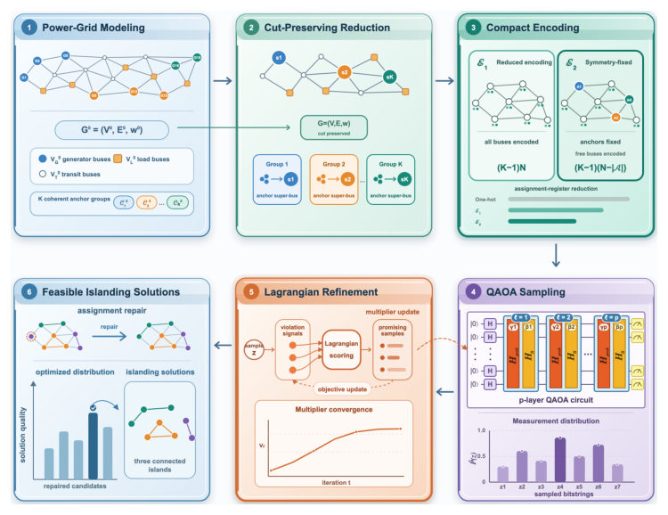
<figcaption class="paper-figure-caption"><b>Fig 1.</b> Fig. 1. Overall PACE-QAOA workflow for controlled power-system islanding. (1) The original grid is modeled as a weighted graph with generator, load, and transit buses and 𝐾coherent anchor groups. (2) Each coherent group is contracted into an anchor super-bus to form a cut-preserving working graph. (3) The compact encodings E1 and E2 represent bus-to-island assignments, with E2 fixing anchor labels to further reduce the assignment register. (4) A 𝑝-layer QAOA circuit samples candidate assignments. (5) Lagrangian refinement uses constraint violations to score promising samples and update the multipliers. (6) Assignment repair converts the selected samples into feasible connected islands....</figcaption>
</figure>
<figure class="paper-figure-card">
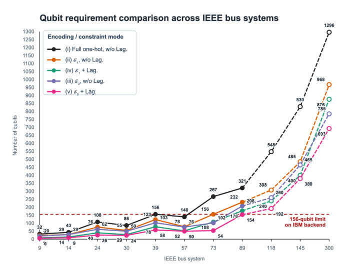
<figcaption class="paper-figure-caption"><b>Fig 2.</b> Fig. 2. Qubit requirements of the five islanding formulations across IEEE bus systems. Black represents full one- hot QAOA. Orange and green represent encoding E1 without and with the Lagrangian treatment, respectively. Purple and magenta represent encoding E2 without and with the Lagrangian treatment, respectively. Filled markers and solid lines indicate executed cases through the IEEE 89-bus system. Open markers and dashed lines indicate formula-based projections for the IEEE 118-, 145-, and 300-bus systems. The red dashed line marks the 156-qubit capacity of the available IBM backend.</figcaption>
</figure>
<figure class="paper-figure-card">
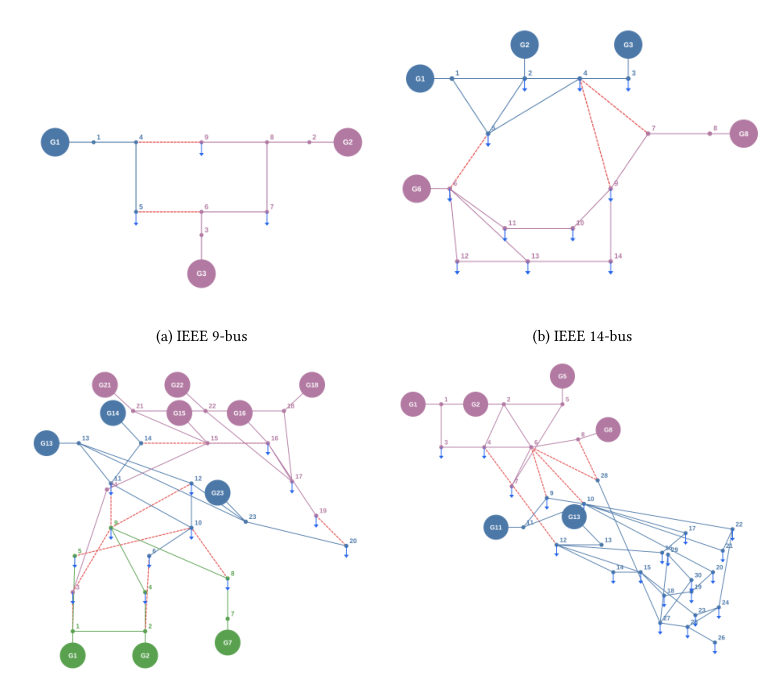
<figcaption class="paper-figure-caption"><b>Fig 3.</b> Fig. 3. Optimal islanding results generated by the proposed QAOA framework on the IEEE 9-, 14-, 24-, and 30-bus test systems. Bus colors indicate the island assignment of each bus, and the red dashed lines denote the transmission interfaces removed to form the final islands. The resulting islands consist mainly of neighboring buses and require only a few transmission lines to be disconnected.</figcaption>
</figure>
<figure class="paper-figure-card">
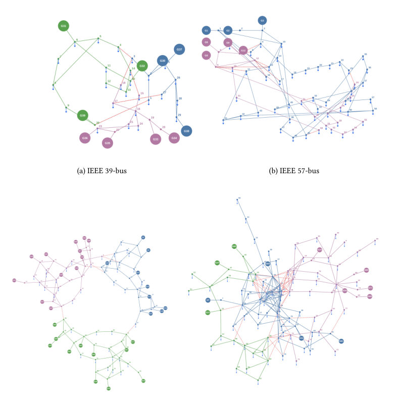
<figcaption class="paper-figure-caption"><b>Fig 4.</b> Fig. 4. Optimal islanding results generated by the proposed QAOA framework on the IEEE 39-, 57-, 73-, and 89-bus test systems. Bus colors indicate the island assignment of each bus, and the red dashed lines denote the transmission interfaces removed to form the final islands. The resulting islands consist mainly of neighboring buses and require only a few transmission lines to be disconnected.</figcaption>
</figure>
<figure class="paper-figure-card">
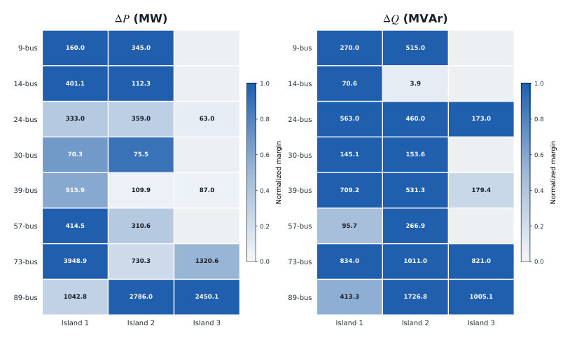
<figcaption class="paper-figure-caption"><b>Fig 5.</b> Fig. 5. Island-level active- and reactive-power support margins across all benchmark systems. Each cell reports the exact margin in MW or MVAr, while the white-to-blue color scale represents the corresponding margin normalized by island demand. Darker cells indicate greater relative headroom. Gray cells denote an unavailable third island in a two-island system.</figcaption>
</figure>
</div>

<p><strong>Summary.</strong> This paper tackles the NP-hard problem of optimal power system islanding by developing a novel, qubit-efficient hybrid quantum optimization approach using QAOA. By combining compact encoding techniques with Lagrangian constraint handling, the authors significantly reduce the required quantum resources and improve the scalability of the algorithm. This provides a transferable pathway for applying constrained quantum optimization to large, real-world engineering problems on near-term hardware.</p>
<p><strong>Why it may be interesting.</strong> While focused on power systems, the core methodology—developing resource-efficient quantum encodings and constraint handling for hard combinatorial problems—is highly relevant to simulating complex many-body Hamiltonians in AMO physics or optimizing quantum control sequences.</p>
<details>
<summary>Detailed structure</summary>
<p><strong>Main problem.</strong> The core problem is solving controlled power system islanding, an NP-hard combinatorial optimization task, using quantum computation.</p>
<p><strong>Main result.</strong> The authors developed a qubit-efficient hybrid QAOA formulation that reduces circuit complexity from quadratic to linear scaling on sparse graphs while maintaining solution quality across multiple IEEE test systems.</p>
<p><strong>Method.</strong> They employ a physics-informed compact encoding and a qubit-efficient Lagrangian constraint strategy within the QAOA framework to manage resource constraints imposed by near-term quantum hardware.</p>
<p><strong>Model / system.</strong> The model is a power network represented as a weighted graph, where the goal is partitioning it into self-sustaining islands. The optimization is formulated as minimizing cut weight subject to connectivity and size constraints.</p>
<p><strong>Key observables.</strong> Feasible, high-quality islanding solutions; linear scaling of phase-separator and per-layer gate complexity; stable solution quality under device noise.</p>
<p><strong>Important parameters / regimes.</strong> System size (up to 89 buses); fixed number of islands ($K$); circuit depth and sampling budgets.</p>
<p><strong>Assumptions / limitations.</strong> The approach assumes that compact encoding and Lagrangian updates can effectively reduce the required qubit count below conventional formulations, although final feasibility requires classical power-flow analysis.</p>
<p><strong>Figures summary.</strong> Figures compare different Hamiltonian formulations (e.g., direct vs. Lagrangian) showing reductions in Pauli-term count and improved landscape smoothness for trainability.</p>
<p><strong>Paper structure.</strong> The paper introduces the problem, develops a compact encoding ($E_1$ to $E_2$), implements a slack-free Lagrangian treatment, analyzes complexity scaling (reducing gate complexity from quadratic to linear), validates results on multiple IEEE benchmarks, and performs noise analysis.</p>
</details>
<details>
<summary>Abstract</summary>
<p>Controlled islanding partitions a stressed power network to limit disrupted power transfer while preserving operational integrity in every island. This NP-hard partitioning problem becomes increasingly demanding as networks grow, motivating quantum optimization as a complementary approach. However, limited qubit capacity restricts the scale at which conventional QAOA can address islanding. This paper develops a qubit-efficient hybrid quantum formulation that overcomes this barrier. A physics-informed compact encoding captures essential islanding decisions while exploiting grid structure, with formal guarantees preserving the feasible solution space and optimization objective. A qubit-efficient Lagrangian strategy combines quantum optimization with classical refinement to enforce operational constraints. Complexity analysis shows that for fixed island counts on sparse graphs, the formulation reduces phase-separator and per-layer gate complexity from quadratic to linear scaling. Evaluations on eight IEEE systems (9 to 89 buses) across multiple quantum backends produce feasible, high-quality solutions under practical circuit and sampling budgets. Factorial ablation attributes resource and runtime gains to the complementary effects of compact encoding and qubit-efficient Lagrangian constraint handling. Noise analysis demonstrates stable solution quality under device noise, and landscape diagnostics reveal smoother, more consistently scaled QAOA cost surfaces. These results provide a transferable pathway for scaling constrained quantum optimization toward larger real-world applications on near-term hardware.</p>
</details>
<p><sub><a href="#top">↑ back to top</a></sub></p>

<p><a id="paper-2608.03908"></a></p>
<h3 id="thermodynamic-phase-transition-pairing-symmetry-and-fermi-surface-topology-in-ruddlesden-popper-nickelate-films"><a href="http://arxiv.org/abs/2608.03908v1">Thermodynamic phase transition, pairing symmetry and Fermi surface topology in Ruddlesden-Popper nickelate films</a></h3>
<p><strong>Authors:</strong> Yu Miao, Zhiwei Wang, Hongxu Sun, Jianchang Shen, Runqing Luan, Zhipeng Ou, Xinru Yong, Zhenyu Wang, Tao Wu, Haoyu Hu, Junfeng He, Xianhui Chen<br>
<strong>Type:</strong> both · <strong>Category:</strong> strongly correlated electrons · <strong>PDF:</strong> <a href="https://arxiv.org/pdf/2608.03908v1">https://arxiv.org/pdf/2608.03908v1</a><br>
<strong>Analysis basis:</strong> full PDF text, analyzed in chunks
<strong>Topic relevance:</strong> <code>driven-dissipative phase transition</code> <strong>2/5</strong> · <code>Keldysh / 2PI / non-Gaussian methods</code> <strong>1/5</strong> · <code>Kondo &amp; dissipative impurity</code> <strong>1/5</strong> · <code>analog quantum simulation</code> <strong>1/5</strong></p>
<div class="figure-strip-hint">↔ Scroll figures horizontally</div>
<div class="paper-figures-scroll">
<figure class="paper-figure-card">
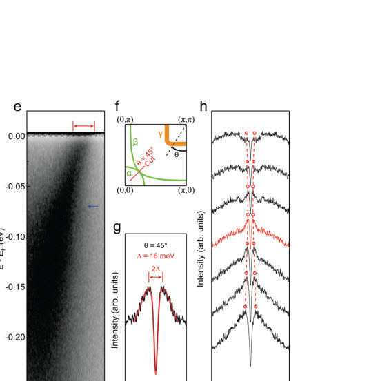
<figcaption class="paper-figure-caption"><b>Fig 1.</b> Fig. 1. Electronic structure of La2PrNi2O7/NdAlO3. (a) Crystal structure of</figcaption>
</figure>
<figure class="paper-figure-card">
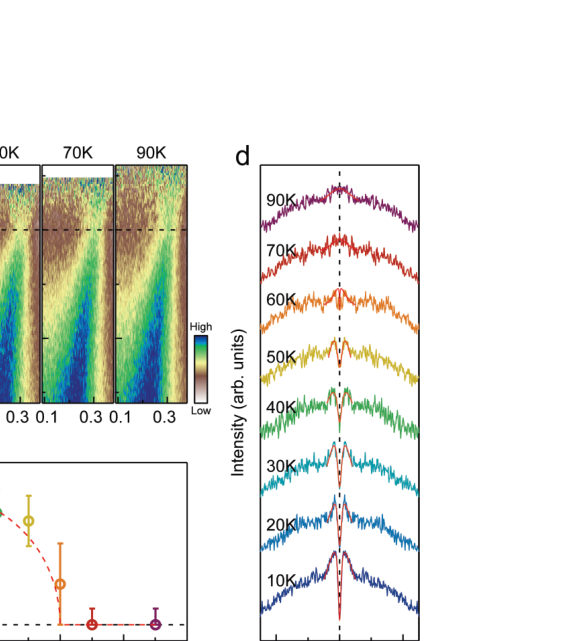
<figcaption class="paper-figure-caption"><b>Fig 2.</b> Fig. 2. Temperature dependence of the superconducting gap in La2PrNi2O7/NdAlO3.</figcaption>
</figure>
<figure class="paper-figure-card">
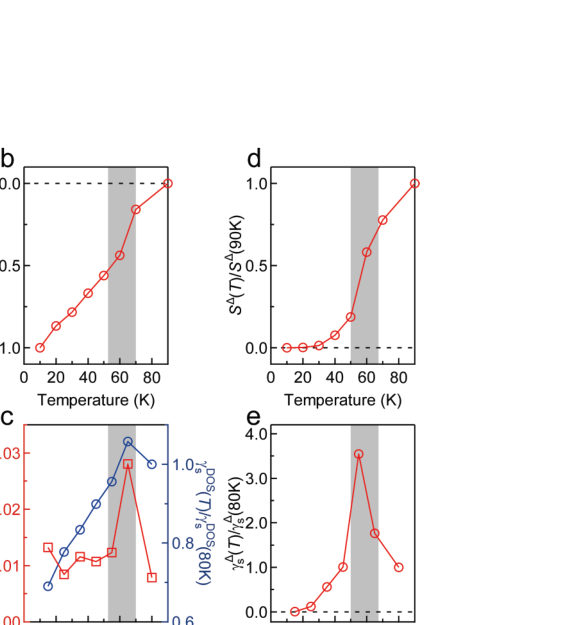
<figcaption class="paper-figure-caption"><b>Fig 3.</b> Fig. 3. Temperature evolution of the electron density of states and electronic specific</figcaption>
</figure>
<figure class="paper-figure-card">
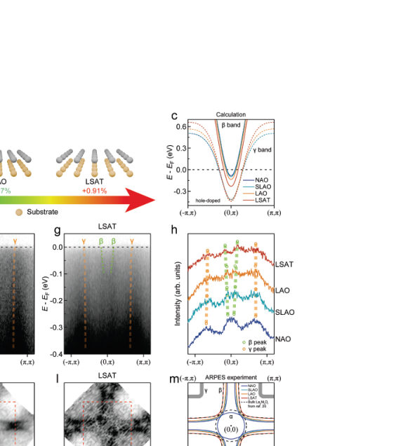
<figcaption class="paper-figure-caption"><b>Fig 4.</b> Fig. 4. Evolution of Fermi surface topology with epitaxial strain in La2PrNi2O7 thin</figcaption>
</figure>
</div>

<p><strong>Summary.</strong> This work investigates superconductivity in RP nickelate films using ARPES and thermodynamic analysis. The authors report direct evidence for a superconducting phase transition via an electronic specific heat jump, confirming a nonzero order parameter. They establish that the pairing symmetry is nodeless (s-wave) and map how the Fermi surface topology relates to this emergent superconducting state.</p>
<p><strong>Why it may be interesting.</strong> While focused on solid-state physics, the clear measurement of a phase transition signature ($\Delta C/T$) and the determination of pairing symmetry provide fundamental insights into emergent quantum ground states relevant to strongly correlated electron systems.</p>
<details>
<summary>Detailed structure</summary>
<p><strong>Main problem.</strong> To investigate high-transition-temperature superconductivity and determine the pairing symmetry in Ruddlesden-Popper nickelate films, specifically by providing direct thermodynamic evidence of the superconducting phase transition.</p>
<p><strong>Main result.</strong> The study observed a clear electronic specific heat jump at T_C, confirming a thermodynamic phase transition, and established that the superconducting gap is nodeless, suggesting an s-wave pairing symmetry in these RP nickelates.</p>
<p><strong>Method.</strong> The research combines Angle-Resolved Photoemission Spectroscopy (ARPES) measurements with Density Functional Theory (DFT) calculations to probe electronic structure and thermodynamics.</p>
<p><strong>Model / system.</strong> The physical system is the Ruddlesden-Popper (RP) nickelate heterostructure, $  ext{La}_2   ext{PrNi}_2 ext{O}_7/   ext{NdAlO}_3$, thin films. Measurements are performed on these epitaxial films under varying strain conditions.</p>
<p><strong>Key observables.</strong> Superconducting gap magnitude ($\Delta \sim 16 	ext{ meV}$), electronic specific heat jump at $T_C$, and the topology of the Fermi surface pockets ($\alpha, eta, \gamma$).</p>
<p><strong>Important parameters / regimes.</strong> Critical temperature ($T_C$), superconducting order parameter, epitaxial strain, and orbital character (e.g., $   ext{dz}^2$ pocket).</p>
<p><strong>Assumptions / limitations.</strong> The electronic specific heat analysis relies on analogies with cuprates; DFT calculations often assume a single-layer limit to simplify the model.</p>
<p><strong>Figures summary.</strong> Figures illustrate ARPES results showing gap opening, temperature dependence of the gap, evidence for the specific heat jump at $T_C$, and how Fermi surface pockets evolve under varying epitaxial strain.</p>
<p><strong>Paper structure.</strong> The paper proceeds by characterizing the electronic structure via ARPES, demonstrating the superconducting transition through thermodynamic measurements (specific heat), determining the pairing symmetry from the gap structure, and finally mapping the relationship between Fermi surface topology and superconductivity using strain dependence.</p>
</details>
<details>
<summary>Abstract</summary>
<p>Ruddlesden-Popper (RP) nickelates provide an uncharted territory to explore high-transition-temperature (high-$T_C$) superconductivity and superconducting mechanism. Here, we investigate the electronic structure of a new type of high-$T_C$ superconducting RP nickelate heterostructure $\mathrm{La_2PrNi_2O_7/NdAlO_3}$ by angle-resolved photoemission spectroscopy. A superconducting state is observed without a pseudogap state, enabling a direct measurement of the superconducting order parameter and a microscopic extraction of the electronic specific heat. The observed superconducting gap opens at $T_C$ with prominent coherence peaks, illustrating the emergence of nonzero order parameter upon entering the superconducting state. An electronic specific heat jump appears at $T_C$, further demonstrating a thermodynamic phase transition. The magnitude of the superconducting order parameter is quantified by the observed superconducting coherence peaks, and a nodeless behavior is unambiguously established in the absence of pseudogap. The underlying Fermi surface consists of $α$, $β$ and $γ$ pockets, exhibiting a multi-orbital nature. Strain dependent measurements further reveal the $γ$ pocket in all superconducting and non-superconducting films with different epitaxial strain. Our results establish the missing thermodynamic evidence for superconducting phase transition in nickelates. They also provide direct evidence for the symmetry of the superconducting order parameter and illustrate the relationship between Fermi surface topology and the emergence of superconductivity in RP nickelate films.</p>
</details>
<p><sub><a href="#top">↑ back to top</a></sub></p>

<p><a id="paper-2608.03960"></a></p>
<h3 id="kappa-distributions-as-asymptotic-marginals-of-exponential-family-ensembles"><a href="http://arxiv.org/abs/2608.03960v1">Kappa distributions as asymptotic marginals of exponential family ensembles</a></h3>
<p><strong>Authors:</strong> Sergio Davis<br>
<strong>Type:</strong> theory · <strong>Category:</strong> statistical mechanics · <strong>PDF:</strong> <a href="https://arxiv.org/pdf/2608.03960v1">https://arxiv.org/pdf/2608.03960v1</a><br>
<strong>Analysis basis:</strong> full PDF text, analyzed in chunks
<strong>Topic relevance:</strong> <code>non-equilibrium dynamics</code> <strong>2/5</strong> · <code>driven-dissipative phase transition</code> <strong>1/5</strong> · <code>non-equilibrium universality</code> <strong>1/5</strong></p>
<div class="figure-strip-hint">↔ Scroll figures horizontally</div>
<div class="paper-figures-scroll">
<figure class="paper-figure-card">
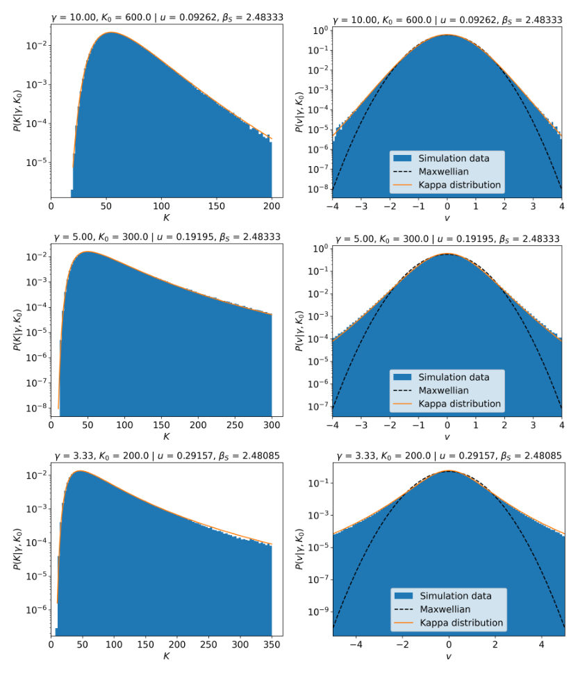
<figcaption class="paper-figure-caption"><b>Fig 1.</b> Figure 1: Left panels, kinetic energy histograms from Metropolis simulations of a system of N=100 particles at γ = 10 and K0 = 600 (first row), γ = 5 and K0 = 300 (second row), and γ=3.33 and K0 = 200 (third row) together with their corresponding exact inverse-gamma distributions. Right panels, histograms of a single velocity component against one-dimensional kappa distributions for u = 0.09262, βS = 2.48333 (first row), u = 0.19195, βS = 2.48333 (second row), and u=0.29157, βS = 2.48085 (third row).</figcaption>
</figure>
<figure class="paper-figure-card">
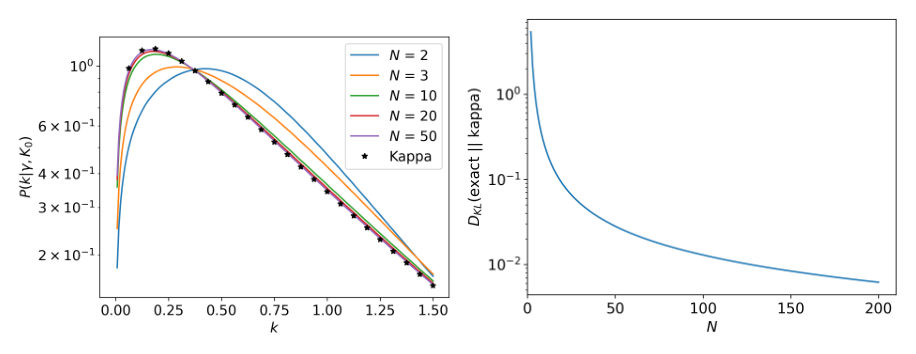
<figcaption class="paper-figure-caption"><b>Fig 2.</b> Figure 2: Left, exact kinetic energy distribution in (60) for γ = 5, k = 0.75 and different values of N (solid lines) versus the kinetic energy distribution corresponding to the kappa model (black stars) in (68). Right, Kullback-Leibler divergence between the exact kinetic energy distribution in (60) and the kinetic energy distribution corresponding to the kappa model in (68) as a function of N for γ = 5 and k = 0.75.</figcaption>
</figure>
</div>

<p><strong>Summary.</strong> This work shows that the kappa distribution arises naturally as an asymptotic limit when analyzing the single-particle velocity distribution of a system whose total kinetic energy follows an inverse-gamma ensemble. The derivation bypasses reliance on nonextensive statistical mechanics by using standard marginalization techniques in the thermodynamic limit, providing both theoretical insight and a practical Monte Carlo simulation method.</p>
<p><strong>Why it may be interesting.</strong> While not directly about quantum systems, the rigorous derivation of non-standard distributions like Kappa from fundamental statistical mechanics principles (marginalization) is highly relevant for understanding generalized thermalization processes in complex many-body systems.</p>
<details>
<summary>Detailed structure</summary>
<p><strong>Main problem.</strong> To demonstrate that the Kappa distribution emerges naturally as an asymptotic marginal single-particle velocity distribution from a system governed by an inverse-gamma ensemble in the thermodynamic limit.</p>
<p><strong>Main result.</strong> The single-particle velocity distribution converges to a kappa distribution form ($P(v|\kappa, 	heta)$) when taking $N 	o \infty$, providing a mechanism for its appearance outside nonextensive statistical mechanics.</p>
<p><strong>Method.</strong> The derivation involves marginalizing the probability density over the velocities of $N$ particles, starting from an initial exponential family ensemble defined by total kinetic energy constraints.</p>
<p><strong>Model / system.</strong> The system is modeled as $N$ interacting particles whose dynamics are analyzed via steady-state solutions to the Liouville equation. The analysis focuses on the probability density derived from an inverse-gamma distribution of the total kinetic energy.</p>
<p><strong>Key observables.</strong> Single-particle velocity distribution $P(v)$, total kinetic energy distribution $P(K)$, and the Kullback-Leibler distance ($ ext{D}_{    ext{KL}}$) used for convergence testing.</p>
<p><strong>Important parameters / regimes.</strong> The spectral index $\kappa$, ensemble parameters $\gamma$ and $K_0$, and the thermodynamic limit ($N 	o \infty$).</p>
<p><strong>Assumptions / limitations.</strong> The derivation relies on taking the thermodynamic limit ($N 	o \infty$) for the asymptotic result, and the initial state is assumed to be an energy steady state.</p>
<p><strong>Figures summary.</strong> Figure 1 compares simulated histograms of kinetic energy/velocity components against exact inverse-gamma distributions. Figure 2 compares the exact vs. kappa model for kinetic energy and plots $ ext{D}_{    ext{KL}}$ divergence versus $N$.</p>
<p><strong>Paper structure.</strong> The paper first establishes the initial probability density based on total kinetic energy constraints, derives the marginal distribution for total energy ($P(K)$), and then performs a second marginalization over remaining particles to find the single-particle velocity distribution. The final steps involve taking the $N 	o \infty$ limit to map this result onto the known kappa distribution form.</p>
</details>
<details>
<summary>Abstract</summary>
<p>Recently (Physica A 660 130370, 2025), emergence of superstatistical behavior in driven classical systems has been shown for systems with constant microcanonical heat capacity. As an application of this result, in this work we show that a system of $N$ particles with inverse gamma distribution of total kinetic energies must have kappa-distributed single-particle velocities in the limit $N \rightarrow \infty$. Our results provide insight into the nature of kappa distributions outside the theory of nonextensive statistical mechanics, while also bringing forward a practical method for the generation of kappa velocities via Monte Carlo Metropolis simulation in the inverse gamma ensemble.</p>
</details>
<p><sub><a href="#top">↑ back to top</a></sub></p>

<p><a id="paper-2608.03355"></a></p>
<h3 id="discrepancy-between-the-h-function-and-entropy-insights-into-the-rigorously-established-boltzmann-equation-for-hard-sphere-gases"><a href="http://arxiv.org/abs/2608.03355v1">Discrepancy between the H-Function and Entropy: Insights into the rigorously established Boltzmann equation for hard-sphere gases</a></h3>
<p><strong>Authors:</strong> Li-Xiang Cen<br>
<strong>Type:</strong> theory · <strong>Category:</strong> statistical mechanics · <strong>PDF:</strong> <a href="https://arxiv.org/pdf/2608.03355v1">https://arxiv.org/pdf/2608.03355v1</a><br>
<strong>Analysis basis:</strong> full PDF text, analyzed in chunks
<strong>Topic relevance:</strong> <code>non-equilibrium dynamics</code> <strong>2/5</strong> · <code>non-equilibrium universality</code> <strong>1/5</strong></p>
<div class="figure-strip-hint">↔ Scroll figures horizontally</div>
<div class="paper-figures-scroll">
<figure class="paper-figure-card">
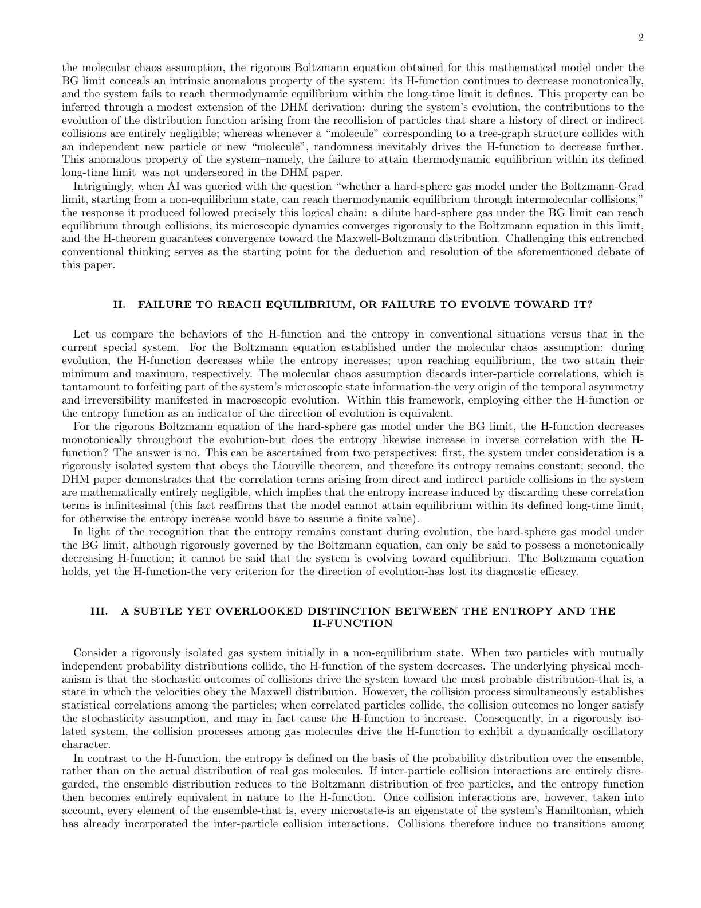
<figcaption class="paper-figure-caption"><b>Fig 1.</b> Low-resolution page preview, page 2</figcaption>
</figure>
<figure class="paper-figure-card">
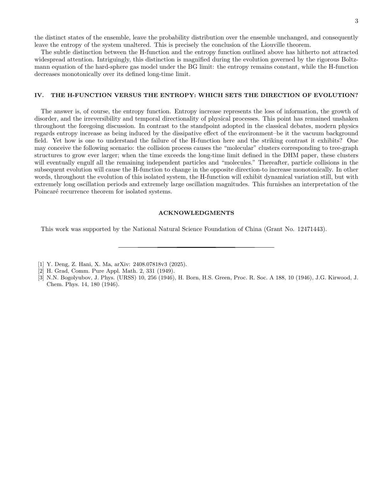
<figcaption class="paper-figure-caption"><b>Fig 2.</b> Low-resolution page preview, page 3</figcaption>
</figure>
</div>

<p><strong>Summary.</strong> This paper rigorously examines the hard-sphere gas model to compare the behavior of the H-function and Entropy. It demonstrates that while conventional theory relies on the H-function decreasing as a measure of irreversibility, rigorous analysis shows entropy remains constant for an isolated system. The conclusion is that entropy, not the H-function, correctly defines the arrow of time in this physical context.</p>
<p><strong>Why it may be interesting.</strong> It challenges foundational assumptions in statistical mechanics regarding irreversible processes (H-theorem) by using a rigorous, microscopic model to show when macroscopic thermodynamic quantities fail to capture the true direction of time evolution for isolated systems.</p>
<details>
<summary>Detailed structure</summary>
<p><strong>Main problem.</strong> The paper investigates the fundamental discrepancy between the H-function and entropy regarding the arrow of time in non-equilibrium statistical mechanics.</p>
<p><strong>Main result.</strong> For the hard-sphere gas model under rigorous derivation, the system's entropy remains constant (due to isolation), while the H-function decreases initially but exhibits complex behavior suggesting it is not the true criterion for irreversible evolution.</p>
<p><strong>Method.</strong> The analysis involves comparing the time evolution of the H-function and Entropy using rigorous derivations of the Boltzmann equation under the Boltzmann-Grad limit.</p>
<p><strong>Model / system.</strong> The system studied is a hard-sphere gas model. The dynamics are governed by the rigorously derived Boltzmann equation, which is analyzed in the context of the Boltzmann-Grad (BG) limit.</p>
<p><strong>Key observables.</strong> H-function ($H$) and Entropy ($S$).</p>
<p><strong>Important parameters / regimes.</strong> Boltzmann-Grad (BG) limit; long-time limit defined by DHM paper.</p>
<p><strong>Assumptions / limitations.</strong> The analysis contrasts the conventional molecular chaos assumption with results from rigorous derivations for isolated systems.</p>
<p><strong>Paper structure.</strong> The structure involves establishing the discrepancy between H and S evolution, analyzing the hard-sphere gas model under BG limits, contrasting this with standard Boltzmann theory, and concluding that entropy dictates irreversibility.</p>
</details>
<details>
<summary>Abstract</summary>
<p>By investigating the origin of the evolutionary discrepancy between the H-function and entropy, we elucidate that the H-function fails to serve as a valid arrow-of-time criterion in the rigorously derived Boltzmann equation for the hard-sphere gas model under the Boltzmann-Grad limit.</p>
</details>
<p><sub><a href="#top">↑ back to top</a></sub></p>

<p><a id="paper-2608.03824"></a></p>
<h3 id="impossibility-of-perfectly-complete-many-round-key-agreement-in-the-qrom"><a href="http://arxiv.org/abs/2608.03824v1">Impossibility of Perfectly Complete Many-Round Key Agreement in the QROM</a></h3>
<p><strong>Authors:</strong> Longcheng Li, Qian Li, Xingjian Li, Qipeng Liu<br>
<strong>Type:</strong> theory · <strong>Category:</strong> quantum information and computing · <strong>PDF:</strong> <a href="https://arxiv.org/pdf/2608.03824v1">https://arxiv.org/pdf/2608.03824v1</a><br>
<strong>Analysis basis:</strong> full PDF text, analyzed in chunks
<strong>Topic relevance:</strong> <code>entanglement &amp; information structure</code> <strong>2/5</strong> · <code>Keldysh / 2PI / non-Gaussian methods</code> <strong>1/5</strong></p>
<div class="figure-strip-hint">↔ Scroll figures horizontally</div>
<div class="paper-figures-scroll">
<figure class="paper-figure-card">
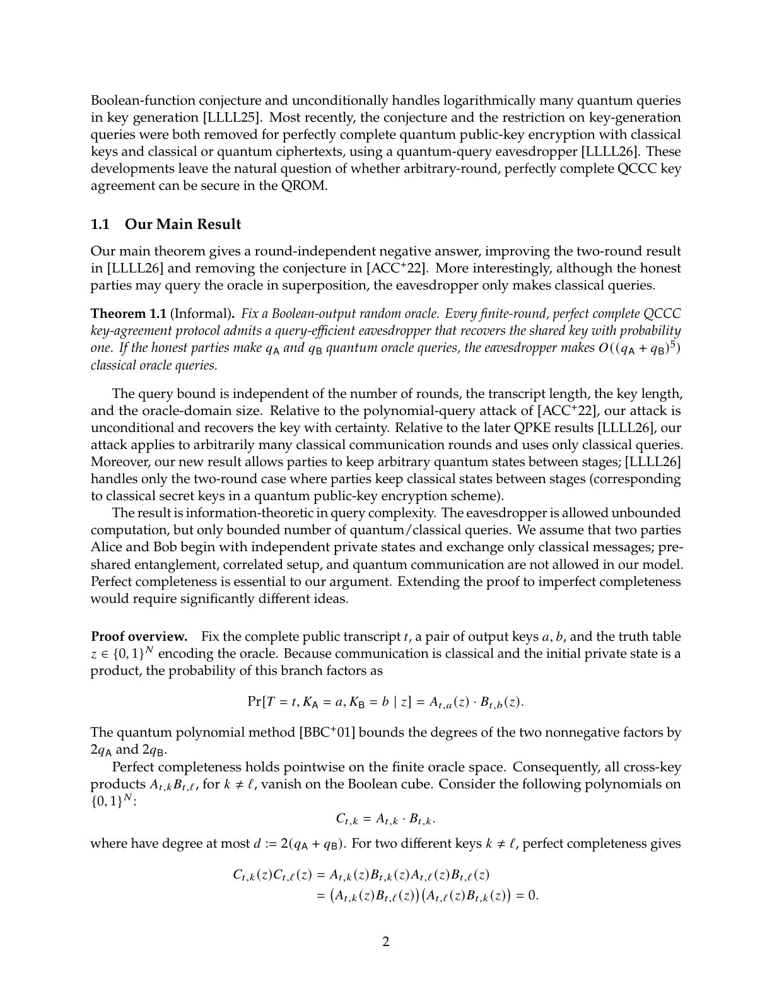
<figcaption class="paper-figure-caption"><b>Fig 1.</b> Low-resolution page preview, page 2</figcaption>
</figure>
<figure class="paper-figure-card">
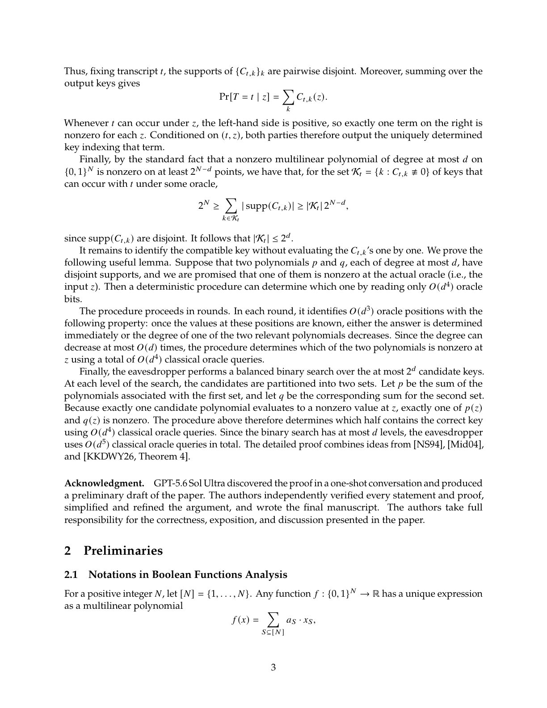
<figcaption class="paper-figure-caption"><b>Fig 2.</b> Low-resolution page preview, page 3</figcaption>
</figure>
<figure class="paper-figure-card">
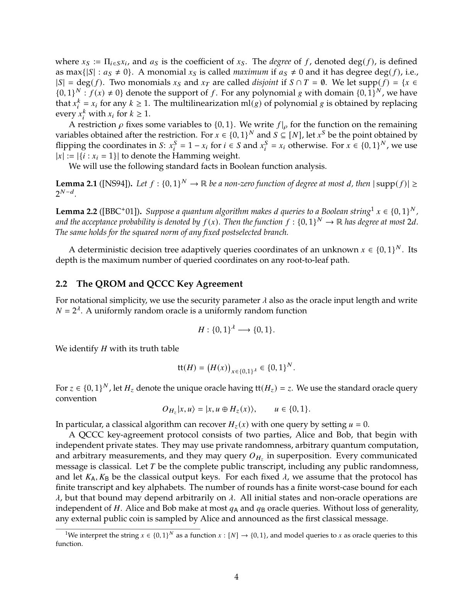
<figcaption class="paper-figure-caption"><b>Fig 3.</b> Low-resolution page preview, page 4</figcaption>
</figure>
<figure class="paper-figure-card">
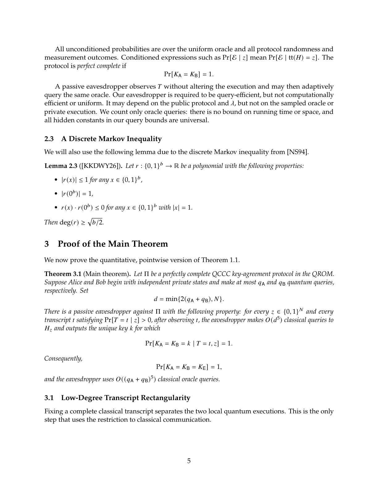
<figcaption class="paper-figure-caption"><b>Fig 4.</b> Low-resolution page preview, page 5</figcaption>
</figure>
<figure class="paper-figure-card">
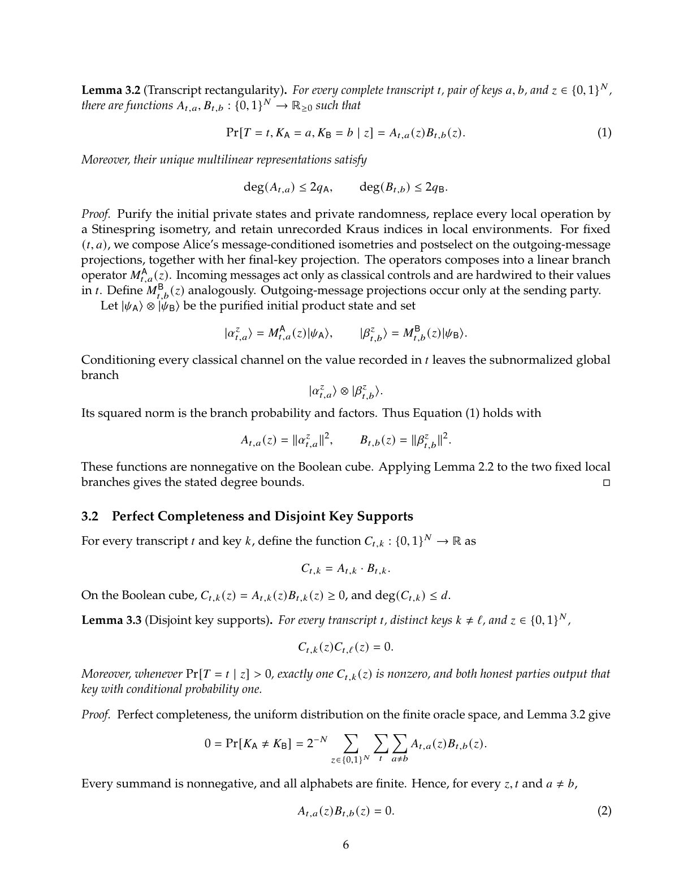
<figcaption class="paper-figure-caption"><b>Fig 5.</b> Low-resolution page preview, page 6</figcaption>
</figure>
</div>

<p><strong>Summary.</strong> This theoretical paper proves a strong impossibility result showing that perfectly complete Quantum Key Agreement (QKA) protocols cannot be built from black-box one-way functions. The authors show an eavesdropper can always recover the key efficiently by exploiting the structure imposed by perfect completeness within the QROM model. This work significantly tightens previous security bounds by removing reliance on unproven conjectures and achieving a round-independent complexity bound.</p>
<p><strong>Why it may be interesting.</strong> While focused on QKD/QKA security proofs rather than physical AMO systems, the underlying mathematical techniques involving polynomial methods and information-theoretic security bounds are fundamental tools in quantum information theory that inform secure communication protocols relevant to quantum networking.</p>
<details>
<summary>Detailed structure</summary>
<p><strong>Main problem.</strong> The paper proves the impossibility of constructing perfectly complete quantum key agreement protocols (QKA) using only black-box access to quantumly secure one-way functions.</p>
<p><strong>Main result.</strong> It demonstrates that an eavesdropper can recover the shared secret key with certainty using a polynomial number of classical oracle queries, specifically $O((q_A + q_B)^5)$.</p>
<p><strong>Method.</strong> The proof utilizes the quantum polynomial method over the Boolean cube and relies on establishing that the probability distributions associated with different keys must have pairwise disjoint supports.</p>
<p><strong>Model / system.</strong> The analysis is conducted in the Quantum Random Oracle Model (QROM) within a Quantum Computation with Classical Communication (QCCC) framework. Parties exchange only classical messages and query an oracle $H_z$.</p>
<p><strong>Key observables.</strong> The shared secret key, which must be uniquely determined by the eavesdropper.</p>
<p><strong>Important parameters / regimes.</strong> The maximum number of quantum queries allowed for Alice ($q_A$) and Bob ($q_B$), which dictate the complexity bound.</p>
<p><strong>Assumptions / limitations.</strong> The protocol must achieve perfect completeness ($\Pr[K_A = K_B] = 1$). The model restricts communication to classical messages, disallowing pre-shared entanglement or quantum channels.</p>
<p><strong>Paper structure.</strong> The paper builds the argument by first establishing polynomial representations for the protocol's probability structure (Transcript Rectangularity), then using properties of disjoint supports to limit candidate keys, and finally employing a decision tree search over these candidates to derive the query complexity bound.</p>
</details>
<details>
<summary>Abstract</summary>
<p>This paper proves that it is impossible to construct perfectly complete quantum key agreement protocols (QKA) from quantumly secure one-way functions (OWFs) in a black-box manner.   Specifically, consider any protocol in which Alice and Bob exchange only classical messages, make at most $q_{\mathsf{A}}$ and $q_{\mathsf{B}}$ quantum queries, respectively, to a Boolean-valued random oracle, and agree on a shared key with certainty. This paper shows that there exists an eavesdropper, given the classical messages, that can recover the shared key with certainty using $O((q_{\mathsf{A}}+q_{\mathsf{B}})^5)$ classical oracle queries. The bound is independent of the number of rounds, transcript length, key length, and oracle-domain size. Previous results only applies to two-round key agreement (Li et al. CRYPTO 26) or relies on unproven conjectures (Austrin et al. CRYPTO 22).   GPT-5.6 Sol Ultra found this proof in a one-shot conversation and drafted a preliminary version of this paper. The authors are fully responsible for the correctness, writing and discussions of this paper.</p>
</details>
<p><sub><a href="#top">↑ back to top</a></sub></p>

<p><a id="paper-2608.02773"></a></p>
<h3 id="quantum-error-correction-at-ultra-low-overhead"><a href="http://arxiv.org/abs/2608.02773v1">Quantum error correction at ultra-low overhead</a></h3>
<p><strong>Authors:</strong> Zhide Lu, Weikang Li, Dong-Ling Deng<br>
<strong>Type:</strong> theory · <strong>Category:</strong> quantum information and computing · <strong>PDF:</strong> <a href="https://arxiv.org/pdf/2608.02773v1">https://arxiv.org/pdf/2608.02773v1</a><br>
<strong>Analysis basis:</strong> full PDF text, analyzed in chunks
<strong>Topic relevance:</strong> <code>QC/QI experiment</code> <strong>2/5</strong> · <code>Rydberg arrays</code> <strong>1/5</strong></p>
<div class="figure-strip-hint">↔ Scroll figures horizontally</div>
<div class="paper-figures-scroll">
<figure class="paper-figure-card">
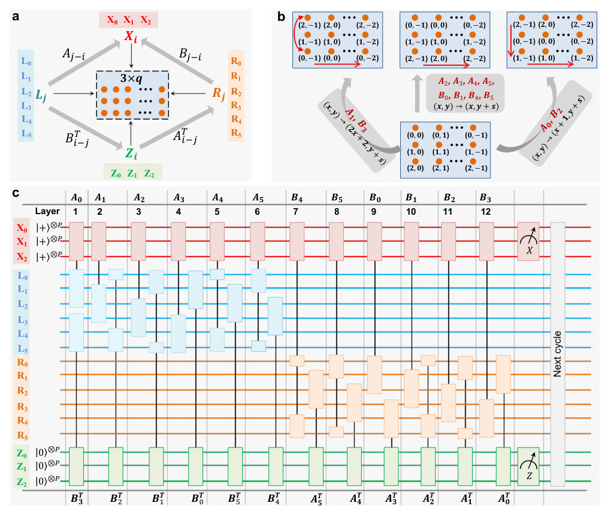
<figcaption class="paper-figure-caption"><b>Fig 1.</b> Fig. 1. Construction and implementation of Cornucopia codes. a, Block structure and connectivity. Data qubits are partitioned into six L- type and six R-type blocks, while check qubits comprise three X-type and three Z-type blocks, with individual qubits indexed by row-column coordinates (x, y) ∈Z3 × Zq. The connectivity between check and data blocks is governed by operators Ak and Bk (indices evaluated modulo 6), each defining a coordinate permutation that specifies a one-to-one physical coupling pattern. Specifically, Xi check blocks couple to Lj and Rj via Aj−i and Bj−i, whereas Zi check blocks couple via B⊤ i−j and A⊤ i−j, respectively. b, Geometric action of coordinate permutations....</figcaption>
</figure>
<figure class="paper-figure-card">
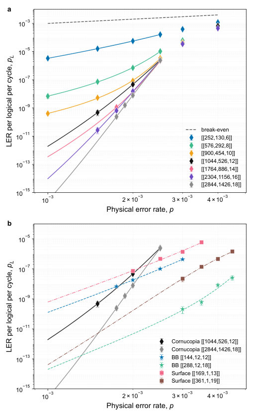
<figcaption class="paper-figure-caption"><b>Fig 2.</b> Fig. 2. Logical performance of Cornucopia codes. a, Logical error rate per logical qubit per cycle, pL, as a function of the physical error rate, p, for the Cornucopia codes in Tab. 1. The grey dashed line in- dicates the break-even condition pL = p. b, Comparison of the Cor- nucopia codes [[1044, 526, 12]] and [[2844, 1426, 18]] against repre- sentative bivariate bicycle codes [31] and rotated surface codes. The surface code encodes a single logical qubit in an independent patch. In both panels, markers denote numerical simulation results, with error bars representing the 1σ statistical uncertainty. The solid and dash-dotted lines represent extrapolations to the low-error regime ob- tained...</figcaption>
</figure>
<figure class="paper-figure-card">
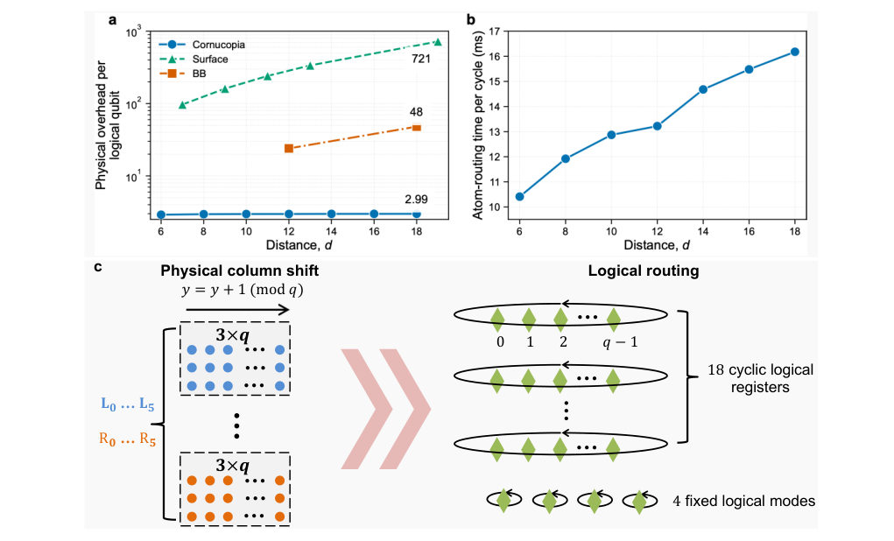
<figcaption class="paper-figure-caption"><b>Fig 3.</b> Fig. 3. Hardware overhead and logical routing of Cornucopia codes. a, Physical overhead per logical qubit as a function of the code distance d. The physical overhead takes into account both data qubits and check qubits required for syndrome extraction. Cornucopia codes (blue) maintain a low overhead of ∼3 across all distances. In contrast, the per-logical physical overhead for surface codes (green) and bivariate bicycle codes (orange) scales unfavorably, reaching 721 (at d = 19) and 48 (at d = 18), respectively. b, Qubit-routing time per syndrome extraction cycle as a function of the code distance d for Cornucopia codes. The physical execution time exhibits a modest increase from 10.4 ms to...</figcaption>
</figure>
</div>

<p><strong>Summary.</strong> This paper introduces Cornucopia codes, a new family of quantum error correcting codes designed specifically for implementation on neutral-atom arrays. These codes overcome traditional trade-offs by achieving high encoding rates and robust error thresholds while maintaining low physical overhead. The results demonstrate a path toward practical, large-scale fault-tolerant quantum computation.</p>
<p><strong>Why it may be interesting.</strong> It provides a concrete blueprint for realizing fault-tolerant quantum computation by directly addressing hardware constraints (like connectivity and overhead) within the theoretical framework of QEC codes.</p>
<details>
<summary>Detailed structure</summary>
<p><strong>Main problem.</strong> The central challenge for large-scale quantum computing is suppressing errors, which requires error correction codes that balance encoding efficiency, error threshold, and hardware feasibility.</p>
<p><strong>Main result.</strong> Cornucopia codes achieve an ultra-high encoding rate (&gt;1/2) and a high pseudo-threshold ($\ge 0.4\%$) while maintaining low physical overhead suitable for near-term quantum processors.</p>
<p><strong>Method.</strong> The authors introduce Cornucopia codes, co-designing the code structure, physical layout, atom rearrangement protocol, and syndrome extraction schedule to enable parallel measurements.</p>
<p><strong>Model / system.</strong> The work is modeled using abstract qLDPC codes, specifically designed for implementation on reconfigurable neutral-atom arrays which provide long-range connectivity.</p>
<p><strong>Key observables.</strong> Logical error rate ($p_L$), encoding rate ($r$), and physical overhead compared to established codes like the surface code or bivariate bicycle codes.</p>
<p><strong>Important parameters / regimes.</strong> Physical error rate ($p=0.1\%$), logical qubit count (e.g., 1426), and circuit depth (constant for syndrome extraction).</p>
<p><strong>Assumptions / limitations.</strong> The analysis assumes a standard circuit-level noise model and relies on the feasibility of implementing coordinate permutations via global rigid motions in neutral-atom arrays.</p>
<p><strong>Figures summary.</strong> Figures illustrate code block structures, geometric actions defining couplings, and the circuit scheduling for syndrome extraction across twelve layers. Tables compare performance metrics like logical error rates across different code families.</p>
<p><strong>Paper structure.</strong> The paper progresses from identifying the trade-off limitations in existing codes to introducing Cornucopia codes. It details the hardware-aware co-design, analyzes the parallel syndrome measurement circuit, and mathematically proves the structure of the resulting logical error subspaces using group algebra homology.</p>
</details>
<details>
<summary>Abstract</summary>
<p>Suppressing errors is the central challenge for useful large-scale quantum computing. While quantum error correction promises a viable solution to this challenge, existing codes typically suffer from trade-offs among encoding efficiency, error threshold, and hardware feasibility. Here, we introduce Cornucopia codes, a family of practical, hardware-efficient quantum low-density parity-check codes that achieve an ultra-high encoding rate exceeding $1/2$ while maintaining a pseudo-threshold exceeding $0.4\%$ under the standard circuit-level noise model. Inspired by recent affine-permutation-based code constructions and the long-range connectivity available in reconfigurable neutral-atom arrays, we adopt a structured code geometry in which the code layout, atom rearrangement, and syndrome-extraction schedule are co-designed. This structure enables nonlocal syndrome measurements through simple, parallel atom rearrangements. A complete syndrome extraction cycle measures all $X$- and $Z$-type checks in parallel with $12$ entangling layers, independent of the code size. The resulting threshold is comparable to those of the surface code and bivariate bicycle codes. In particular, a single code block $[[2844,1426,18]]$ encodes $1{,}426$ distance-$18$ logical qubits, achieving an extrapolated logical error rate of $2.6\times10^{-16}$ ($1.9\times10^{-31}$) per logical qubit per cycle, assuming the physical error rate of $0.1\%$ ($0.01\%$). By comparison, a bivariate bicycle code implementation would require more than $68{,}000$ physical qubits to encode the same number of logical qubits at a comparable logical error rate. These results bring demonstrations of ultra-low overhead quantum error correction within the reach of near-term quantum processors.</p>
</details>
<p><sub><a href="#top">↑ back to top</a></sub></p>

<p><a id="paper-2608.02741"></a></p>
<h3 id="fractal-deconfinement-and-confinement-in-sierpinski-ice"><a href="http://arxiv.org/abs/2608.02741v1">Fractal deconfinement and confinement in Sierpinski ice</a></h3>
<p><strong>Authors:</strong> James Walkling, Roderich Moessner<br>
<strong>Type:</strong> theory · <strong>Category:</strong> statistical mechanics · <strong>PDF:</strong> <a href="https://arxiv.org/pdf/2608.02741v1">https://arxiv.org/pdf/2608.02741v1</a><br>
<strong>Analysis basis:</strong> full PDF text, analyzed in chunks
<strong>Topic relevance:</strong> <code>analog quantum simulation</code> <strong>1/5</strong> · <code>driven-dissipative phase transition</code> <strong>1/5</strong> · <code>methods for driven-dissipative</code> <strong>1/5</strong> · <code>non-equilibrium dynamics</code> <strong>1/5</strong> · <code>non-equilibrium universality</code> <strong>1/5</strong></p>
<div class="figure-strip-hint">↔ Scroll figures horizontally</div>
<div class="paper-figures-scroll">
<figure class="paper-figure-card">
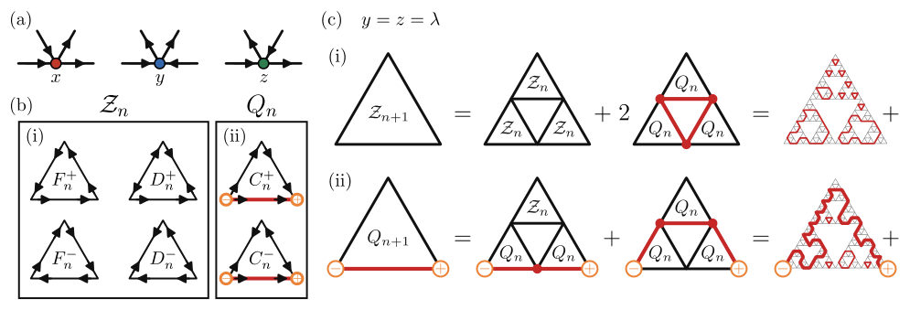
<figcaption class="paper-figure-caption"><b>Fig 1.</b> FIG. 1. (a) three vertex configurations not related by σj →−σj for the Sierpinski gasket six-vertex model. We color the vertices according to their type. They have Boltzmann weights x, y, z such that α = exp(−βEα) for α ∈{x, y, z} with energies Eα. (b) different recursion variables defined by their corner vertex orientations. (i) neutral vertices sum to Zn. (ii) two charge configurations sum to Qn, with a red string joining the orange charges. (c) diagrams for the recursion relations of Eq. 1 where plaquettes are labeled based on their charge as in panel (b) and uncolored bulk vertices correspond to y = z = λ. (i) shows the recursion for Zn where the factor of 2 comes from the two possible...</figcaption>
</figure>
<figure class="paper-figure-card">
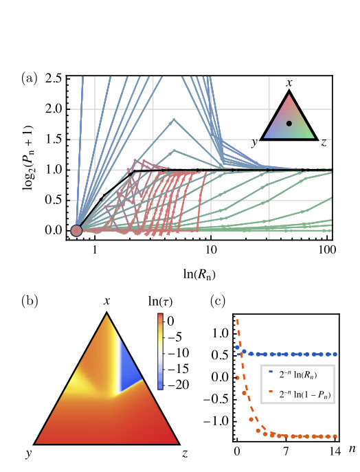
<figcaption class="paper-figure-caption"><b>Fig 2.</b> FIG. 2. Pn and Rn, Eqs. 2,3, for different (x, y, z). (a) pa- rameter flow with n projected onto recursion variables Pn and Rn. The black line is for ice x = y = z. For sufficiently large n, all phases with finite x, y, z flow to a confining point with P∗= 1, Rn →∞. There is an unstable fixed point with respect to y, z &gt; 0 marked by the circle in the lower left. (b) logarithm of the string tension, ln(τ) = ln(2−n ln Rn), for n = 30. We plot a section of the space of (x, y, z) by fixing xyz = 1 where the parameters in the lower left corner are (x, y, z) = (e−5, e−5, e10). The finite value of the tension indi- cates confinement almost everywhere, excluding two disjoint regions with low...</figcaption>
</figure>
<figure class="paper-figure-card">
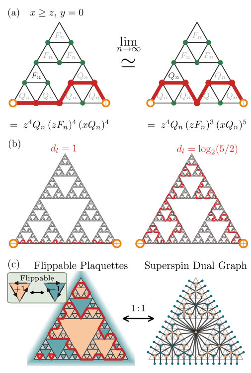
<figcaption class="paper-figure-caption"><b>Fig 3.</b> FIG. 3. Fractal deconfinement and superspins. (a) Two con- tributions to Qn+2, with gray recursion variables indicating unchanged plaquettes. Below the diagrams are their corre- sponding weights with ratio is xQn/zFn = 1 in the limit n →∞for x ≥z, y = 0. (b) Typical string joining two charges with different fractal dimensions, dl (Eq. 9) for n = 6 generations. (c) Flippable dual plaquettes and superspin con- struction for the y = 0 four-vertex model overlayed on the fractal. Highlighted dual plaquettes have boundaries of flip- pable loops of spins, and different domains are separated by strings of x-type vertices. The pth dual plaquette can be treated as an Ising superspin with possible...</figcaption>
</figure>
<figure class="paper-figure-card">
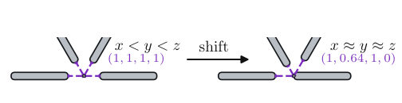
<figcaption class="paper-figure-caption"><b>Fig 4.</b> FIG. 4. Potential experimental implementation of degenerate vertices in artificial spin ice (ASI). The distances of the tips of the micromagnetic islands islands (gray) from the central vertex are shown in purple. They are tuned to the values (1, 0.64, 1, 0) such that x ≈y ≈z as calculated within the dumbbell approximation [11, 48].</figcaption>
</figure>
<figure class="paper-figure-card">
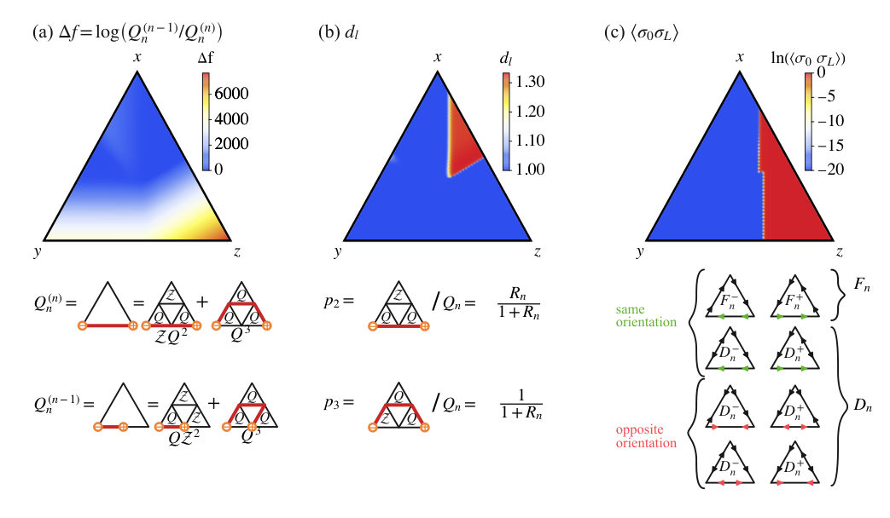
<figcaption class="paper-figure-caption"><b>Fig 5.</b> FIG. 5. Illustrations of diagrams for calculating different observables of interest in the main text alongside full recursion calculations. (a) calculation of the string tension, ∆f, which comes from studying the change in free energy as we move a charge from L/2 to L along the bottom of the fractal. (b) fractal dimension, dl, of the string and its definition via the lengths. The two possible paths at the largest length scales are 3 copies or 2 copies of the previous iteration with probabilities of p3 and p2 respectively. (c) neutral diagrams that contribute to the spin-spin correlator. The spins in color are those at 0 and L. Same circulation configurations give a positive contribution to...</figcaption>
</figure>
</div>

<p><strong>Summary.</strong> This paper analyzes the six-vertex model on the Sierpinski gasket fractal to study charge confinement. It finds that while the standard ice limit shows confinement, specific parameter choices lead to a novel 'fractal deconfinement' regime. The work uses recursive calculations to determine key observables like string tension and the fractal dimension of the connecting strings.</p>
<p><strong>Why it may be interesting.</strong> The concept of emergent fractional dimensions ($d_l$) governing topological excitations (strings) in a statistical system provides deep insights into how dimensionality affects long-range order, relevant to understanding critical phenomena in complex materials.</p>
<details>
<summary>Detailed structure</summary>
<p><strong>Main problem.</strong> The study investigates fractal deconfinement and confinement phenomena by analyzing statistical mechanical models on fractal lattices.</p>
<p><strong>Main result.</strong> The model exhibits a transition from entropic charge confinement (in the ice limit) to fractal deconfinement in specific parameter regimes, characterized by a non-trivial string dimension $d_l$.</p>
<p><strong>Method.</strong> The authors employ recursive calculations for partition functions and correlators tailored to the hierarchical structure of the Sierpinski gasket.</p>
<p><strong>Model / system.</strong> The system is the six-vertex model applied to the Sierpinski gasket, a four-coordinated fractal with Hausdorff dimension $d_f=\log_2 3$. The analysis compares regimes like the standard ice point to specific low-energy limits (e.g., HAFM).</p>
<p><strong>Key observables.</strong> String tension ($  au$), correlation decay length ($\xi$), and the fractal dimension of the connecting string ($d_l$).</p>
<p><strong>Important parameters / regimes.</strong> The vertex weights (x, y, z) which define different regimes; the fractal dimension $d_f = \log_2 3$.</p>
<p><strong>Assumptions / limitations.</strong> The analysis relies on deriving and solving coupled recurrence relations based on the hierarchical structure of the lattice.</p>
<p><strong>Figures summary.</strong> Figures illustrate recursion relation flows, phase diagrams showing parameter dependence, and geometric representations of string paths with different fractal dimensions ($d_l$).</p>
<p><strong>Paper structure.</strong> The paper progresses by defining the model on the fractal, deriving recursive relations for partition functions, analyzing how correlations decay (confinement vs. deconfinement), and finally proposing experimental realizations using artificial spin ice.</p>
</details>
<details>
<summary>Abstract</summary>
<p>We study the six-vertex model on the Sierpinski gasket, a four-coordinated hierarchical fractal with Hausdorff dimension $d_f=\log_23$. Given the importance of dimensionality for the long-wavelength behavior of such models, we specifically consider correlations and confinement as a function of the vertex weights, with the equal-weight point corresponding to the ice model. We calculate the partition function and correlators recursively to obtain a rich phase diagram hosting many different regimes. While the ice model shows entropic charge confinement, a particular four-vertex limit exhibits fractal deconfinement, with the string joining the deconfined charges itself a statistical fractal with fractal dimension $d_l=\log_2(5/2)\approx 1.3$. Finally, we propose a setup as an artificial spin ice to enable experimental study of the rich phenomenology of Sierpinski ice and its generalisations.</p>
</details>
<p><sub><a href="#top">↑ back to top</a></sub></p>

<p><a id="paper-2608.03671"></a></p>
<h3 id="microscopic-origin-of-random-singlet-behavior-in-b-site-disordered-spin-12-perovskite-bacu_13nb_23o_3-revealed-by-exafs-and-thermodynamics"><a href="http://arxiv.org/abs/2608.03671v1">Microscopic Origin of Random Singlet Behavior in B-site Disordered Spin-1/2 Perovskite BaCu_1/3Nb_2/3O_3 Revealed by EXAFS and Thermodynamics</a></h3>
<p><strong>Authors:</strong> Sagar Mahapatra, Francesco De Angelis, Martin Etter, Edmund Welter, M. P. Saravanan, Rajeev Rawat, Carlo Meneghini, Surjeet Singh<br>
<strong>Type:</strong> experiment · <strong>Category:</strong> disordered systems and neural networks · <strong>PDF:</strong> <a href="https://arxiv.org/pdf/2608.03671v1">https://arxiv.org/pdf/2608.03671v1</a><br>
<strong>Analysis basis:</strong> full PDF text, analyzed in chunks
<strong>Topic relevance:</strong> <code>Kondo &amp; dissipative impurity</code> <strong>1/5</strong> · <code>analog quantum simulation</code> <strong>1/5</strong> · <code>exotic spin models in light-matter</code> <strong>1/5</strong> · <code>spintronics-quantum-optics interface</code> <strong>1/5</strong></p>
<div class="figure-strip-hint">↔ Scroll figures horizontally</div>
<div class="paper-figures-scroll">
<figure class="paper-figure-card">
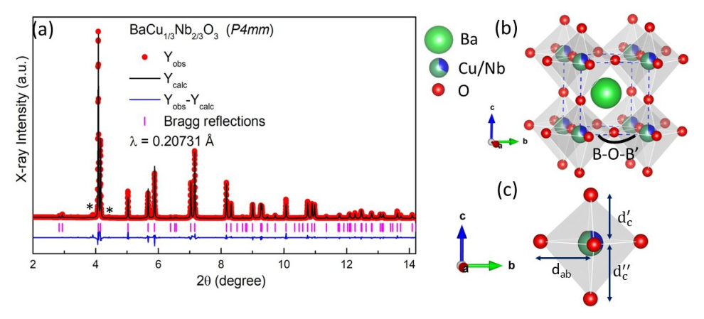
<figcaption class="paper-figure-caption"><b>Fig 1.</b> FIG. 1. (a) Synchrotron X-ray powder diffraction pattern of BCNO showing observed (red), calculated (black), and difference (blue) plots. The magenta sticks show the position of the expected Bragg peaks. (b) The ABO3-type crystal structure of BCNO. (c) An isolated BO6 octahedron showing the slight off-centering of the B-site cations.</figcaption>
</figure>
<figure class="paper-figure-card">
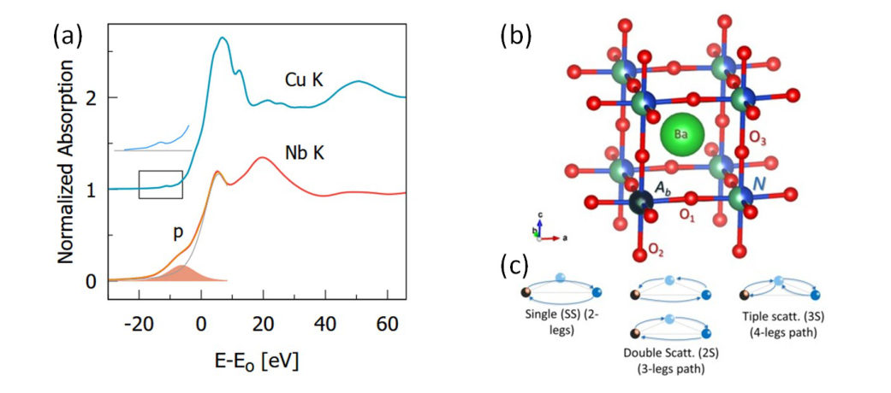
<figcaption class="paper-figure-caption"><b>Fig 2.</b> FIG. 2. (a) Normalized XANES spectra measured on BCNO at the Cu-K and Nb-K edges. For clarity, the energy scale is referenced to the corresponding metal foil edge energies, and the spectra are vertically offset. A tiny pre-edge shoulder is visible in the Cu K-edge XANES spectrum, highlighted in the upper inset. A pre-edge shoulder (denoted p) is also observed at the Nb-K edge. The contribution of the pre-edge peak used in fitting the Nb edge features is shown in orange for clarity, together with the model curve for the edge rise (gray line) (see text). (b) The schematic representation of the pseudo-cubic unit of P4mm structure with the absorber Ab (Cu/Nb) in the left bottom corner (black)...</figcaption>
</figure>
<figure class="paper-figure-card">
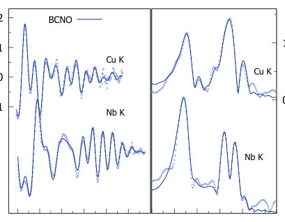
<figcaption class="paper-figure-caption"><b>Fig 3.</b> FIG. 3. Left panel: k2-weighted experimental EXAFS data (dots) and best fit curves (full lines) measured at the Cu and Nb K edges, on BCNO sample. Right panel: moduli of the k2-weighted Fourier transforms of experimental data (dots) and best fit curves (full lines). Data are vertically shifted for clarity.</figcaption>
</figure>
<figure class="paper-figure-card">
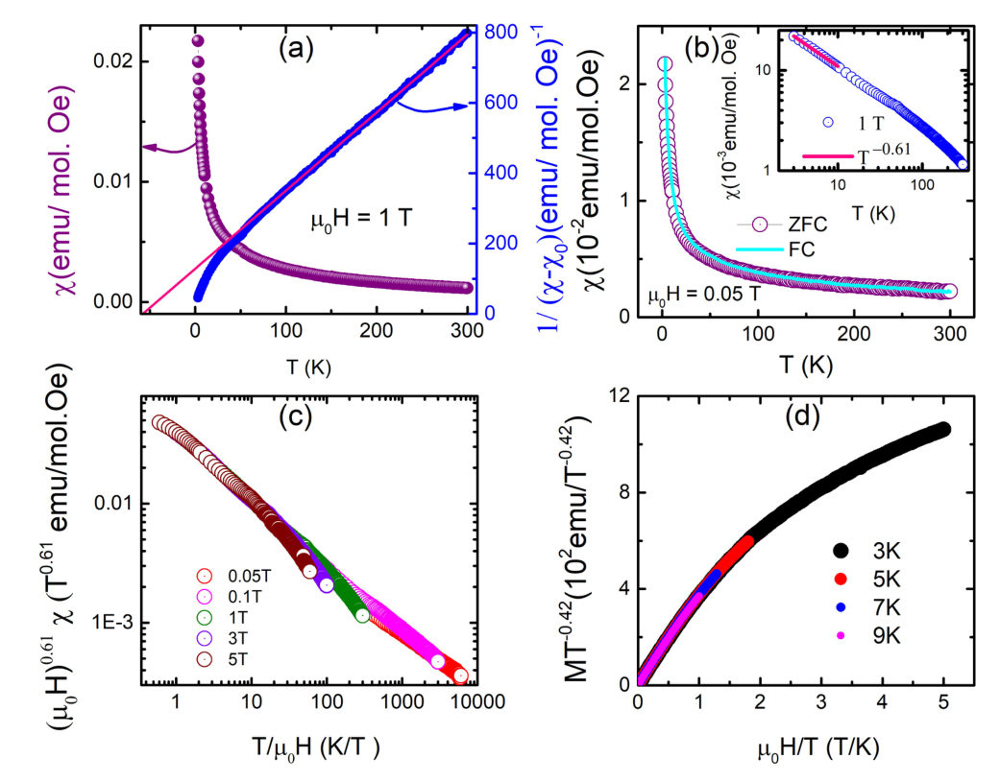
<figcaption class="paper-figure-caption"><b>Fig 4.</b> FIG. 4. Magnetic susceptibility and T/H scaling in BCNO. (a) The temperature variation of magnetic susceptibility χ(T) and the inverse magnetic susceptibility 1/(χ −χ0). The pink line through the data points is the Curie-Weiss fit. (b) The zero-field- cooled (ZFC) and field-cooled (FC) data measured under µ0H = 0.05T. Inset: power-law (T −γ) fitting of χ −χ0 below 10 K shown a log-log scale. (c) and (d) show data scaling behavior of χ(T) and isothermal magnetization M(H), respectively. See text for details.</figcaption>
</figure>
<figure class="paper-figure-card">
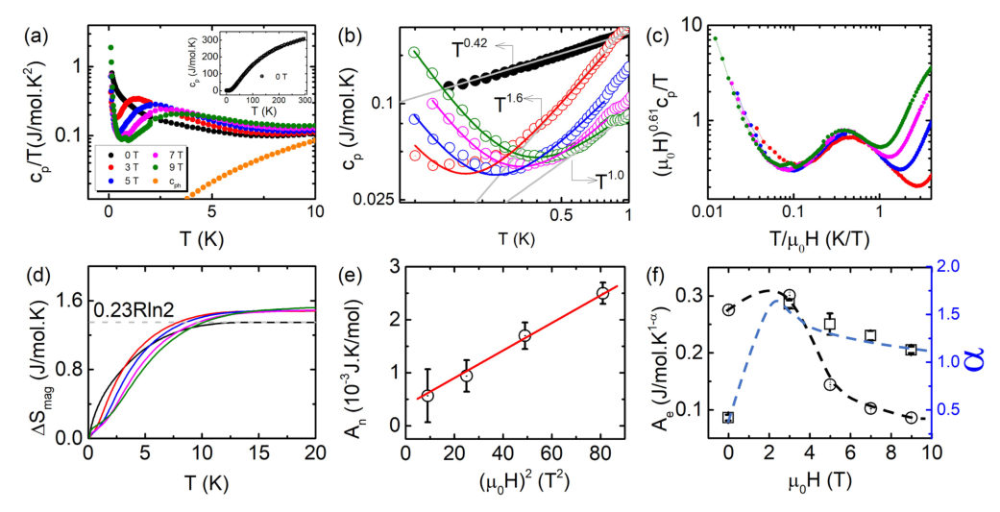
<figcaption class="paper-figure-caption"><b>Fig 5.</b> FIG. 5. (a) The temperature variation of specific heat plotted as cp/T. The calculated phonon contribution is also shown. Inset: The temperature-dependent zero-field specific heat cp(T) in the temperature range of 0.1 ≤T ≤300 K. (b) cp versus T for various applied magnetic fields plotted on a log-log scale. The fitted curves (eq. 3) are shown as solid lines through the data points. The gray colored lines are a guide to eye showing T 0.42 (representative of the zero-field data), T 1.6 (representative of the intermediate fields), and T 1.0 (representative of the high-field data). (c) The data collapse of the scaled specific heat µ0Hγcp/T plotted against the normalized temperature T/µ0H for...</figcaption>
</figure>
</div>

<p><strong>Summary.</strong> The researchers studied the disordered perovskite $    ext{BaCu}<em 2_3="2/3">{1/3} ext{Nb}</em>_3$ using X-ray spectroscopy and low-temperature magnetometry. They found that local structural disorder suppresses direct magnetic linkages, leading to a Random Singlet (RS) ground state characterized by power-law temperature dependencies in thermodynamic measurements. Furthermore, applying high magnetic fields induces a crossover toward a distinct quantum paramagnetic phase.}   ext{O</p>
<p><strong>Why it may be interesting.</strong> This work provides a detailed experimental realization of random-singlet physics in an oxide magnet, offering insights into how local structural disorder dictates macroscopic quantum magnetic behavior, which is relevant for understanding disordered quantum materials.</p>
<details>
<summary>Detailed structure</summary>
<p><strong>Main problem.</strong> The study investigates the microscopic origin of Random Singlet (RS) behavior in a disordered perovskite, $   ext{BaCu}<em 2_3="2/3">{1/3} ext{Nb}</em>_3$, and its connection to magnetic ordering.}   ext{O</p>
<p><strong>Main result.</strong> The material exhibits clear signatures of a random-singlet phase via power-law scaling in specific heat and susceptibility at low temperatures, while high fields suggest a crossover to a quantum paramagnetic state.</p>
<p><strong>Method.</strong> A combined approach using structural probes (XRD/XAFS) to determine local atomic order, coupled with detailed thermodynamic measurements ($c_p(T)$ and $\chi(T)$ under varying magnetic fields).</p>
<p><strong>Model / system.</strong> The system is the B-site disordered spin-1/2 perovskite $   ext{BaCu}<em 2_3="2/3">{1/3} ext{Nb}</em>_3$, where disorder leads to quenched randomness in the magnetic exchange network.}   ext{O</p>
<p><strong>Key observables.</strong> Specific heat ($c_p(T)$), magnetic susceptibility ($\chi(T)$), and local structural correlations derived from EXAFS.</p>
<p><strong>Important parameters / regimes.</strong> Random-singlet exponent $\gamma \approx 0.6$; crossover to $T$-linear specific heat at high fields; low Curie-Weiss temperature ($\Theta_{CW}\approx -50$ K).</p>
<p><strong>Assumptions / limitations.</strong> The magnetic behavior can be modeled by the Random Singlet (RS) theory, and structural disorder is primarily responsible for suppressing long-range order.</p>
<p><strong>Figures summary.</strong> Figures detail XRD patterns confirming average structure, XAFS showing local Cu/Nb correlations, and $c_p$ vs. T plots demonstrating power-law scaling at low fields and linear behavior at high fields.</p>
<p><strong>Paper structure.</strong> The paper first uses structural methods (XRD/XAFS) to characterize the disorder; it then analyzes magnetic susceptibility and specific heat measurements across varying fields to diagnose the nature of the spin ground state, concluding with entropy calculations to estimate contributions from different spin subsystems.</p>
</details>
<details>
<summary>Abstract</summary>
<p>We report a combined structural and thermodynamic study of the ABO$_3$-type disordered perovskite BaCu$_{1/3}$Nb$_{2/3}$O$_3$ (BCNO), whose B site is jointly occupied by Cu and Nb in the $1:2$ ratio. Using synchrotron powder x-ray diffraction (XRD) and x-ray absorption fine structure (XAFS) spectroscopy, we investigate the microscopic nature of Cu$^{2+}$/Nb$^{5+}$ disorder on the pseudo-cubic B-sublattice and its relation to the emergent random-singlet (RS) behavior evidenced at low temperatures. While XRD reveals no long-range Cu/Nb ordering and average site occupancy consistent with stoichiometry, XAFS reveals a peculiar local chemical order characterized by preferential heteroatomic Cu$:$Nb correlations. This local arrangement strongly suppresses direct Cu$:$Cu linkages, despite the Cu concentration being close to the percolation threshold of a cubic lattice. The resulting exchange network explains the absence of spin-glass freezing or long-range magnetic order in the presence of substantial antiferromagnetic interactions, as indicated by a Curie-Weiss temperature $Θ_{CW}\approx -50$ K. Instead, the magnetic susceptibility $χ(T)$ and specific heat $c_p(T)$ exhibit power-law behavior and characteristic single-parameter $T/H$ scaling over broad temperature and magnetic-field ranges, consistent with random-singlet phenomenology. Notably, at very low temperatures, the specific heat behavior transitions from $T^{1-γ}$ ($γ\approx 0.6$ from the $T/H$ scaling) in zero-field to a T-linear dependence under high field, indicating a crossover to a distinct low-energy regime whose microscopic origin remains to be established.</p>
</details>
<p><sub><a href="#top">↑ back to top</a></sub></p>

<p><a id="paper-2608.02722"></a></p>
<h3 id="11d-lattice-dirac-fermions-from-non-onsite-vector-and-axial-symmetries"><a href="http://arxiv.org/abs/2608.02722v1">1+1d Lattice Dirac Fermions from Non-Onsite Vector and Axial Symmetries</a></h3>
<p><strong>Authors:</strong> Tabin Dharanikota, Lukasz Fidkowski<br>
<strong>Type:</strong> theory · <strong>Category:</strong> strongly correlated electrons · <strong>PDF:</strong> <a href="https://arxiv.org/pdf/2608.02722v1">https://arxiv.org/pdf/2608.02722v1</a><br>
<strong>Analysis basis:</strong> full PDF text, analyzed in chunks
<strong>Topic relevance:</strong> <code>Frenkel-Kontorova</code> <strong>1/5</strong> · <code>Keldysh / 2PI / non-Gaussian methods</code> <strong>1/5</strong> · <code>analog quantum simulation</code> <strong>1/5</strong></p>
<div class="figure-strip-hint">↔ Scroll figures horizontally</div>
<div class="paper-figures-scroll">
<figure class="paper-figure-card">
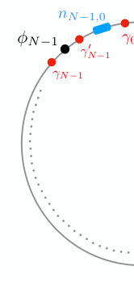
<figcaption class="paper-figure-caption"><b>Fig 1.</b> Figure 1: Degrees of freedom of the fermionic Villain model. The bosonic degrees of freedom are ϕr ∈R and nr,r+1 ∈Z/2. The fermionic degrees of freedom are Majorana fermions γr, γ′ r. There is a fermionic Villain condition (eq. 2) imposed on all of the states in the Hilbert space. In the (equivalent) graded tensor product Hilbert space, ϕr are replaced with ˜ϕr ∈R/Z, and nr,r+1 by ˜nr,r+1 ∈Z/2, and the Villain condition maps onto the constraint that odd angular momentum states of the ˜ϕr rotor are fermion parity odd (iγrγ′ r = −1).</figcaption>
</figure>
</div>

<p><strong>Summary.</strong> This work constructs and solves a lattice Hamiltonian for a 1+1d Dirac fermion that possesses exact U(1) vector and axial symmetries. By mapping the complex system to an equivalent fermionic Villain model, the authors demonstrate its solvability and show it captures the physics of interacting Luttinger liquids. This provides a powerful theoretical tool for studying symmetry-protected topological phases in condensed matter systems.</p>
<p><strong>Why it may be interesting.</strong> The rigorous construction of an exactly solvable interacting fermionic system realizing a Dirac fermion while maintaining specific symmetries is highly relevant for understanding strongly correlated electron models where symmetry protection is crucial.</p>
<details>
<summary>Detailed structure</summary>
<p><strong>Main problem.</strong> The primary goal is constructing an exactly solvable lattice Hamiltonian for a 1+1d Dirac fermion that possesses exact microscopic U(1) vector and axial symmetries, while correctly accounting for the mixed anomaly between these symmetries.</p>
<p><strong>Main result.</strong> The authors successfully construct such a model, showing it realizes the entire Luttinger liquid universality class in an exactly solvable manner through mapping to a fermionic Villain Hilbert space.</p>
<p><strong>Method.</strong> The solvability is established by constructing two equivalent descriptions of the Hilbert space (graded tensor product and fermionic Villain) and demonstrating an isomorphism between them. Low-energy physics is analyzed via mode expansion, reducing the Hamiltonian to coupled harmonic oscillators.</p>
<p><strong>Model / system.</strong> The system is a 1+1d lattice Dirac fermion model defined on a ring with N sites, involving bosonic rotors ($\phi_r$), discrete variables ($n_{r,r+1}$), and Majorana fermions. The Hamiltonian incorporates constraints ensuring the required symmetries are maintained.</p>
<p><strong>Key observables.</strong> Chiral charges ($Q_L, Q_R$), energy spectrum of normal modes ($\omega_k$), and the mixing amplitude $A(t)$ used to compare field theory vs. Villain model predictions.</p>
<p><strong>Important parameters / regimes.</strong> The ratio U0/J0 determines the fixed point; the analysis distinguishes between sectors based on axial charge ($Q_A=0$, even, or odd).</p>
<p><strong>Assumptions / limitations.</strong> The analysis relies heavily on defining and utilizing an isomorphism ('Villain disentangler') between two formal descriptions of the Hilbert space, and often involves gauge-fixing constraints to simplify the Hamiltonian.</p>
<p><strong>Figures summary.</strong> Figure 1 illustrates the degrees of freedom for the fermionic Villain model used in the construction.</p>
<p><strong>Paper structure.</strong> The paper proceeds by defining the complex Hilbert space structure using two formalisms (graded tensor product vs. Villain) and establishing their equivalence. It then constructs the Hamiltonian, solves it by mapping to harmonic oscillators, analyzes low-energy excitations based on axial charge sectors, and finally compares predictions for coupling constants derived from field theory versus the lattice model.</p>
</details>
<details>
<summary>Abstract</summary>
<p>We construct an exactly solvable Hamiltonian lattice model realizing a 1+1d Dirac fermion, with exact microscopic vector and axial vector $U(1)$ symmetries. The mixed anomaly between these is accommodated by the not-on-site action of the symmetries. Our Hilbert space is a $Z_2$-graded tensor product of local $Z_2$-graded Hilbert spaces which include infinite dimensional rotor degrees of freedom. The Hamiltonian becomes manifestly exactly solvable after a locality-preserving unitary mapping to an equivalent fermionic Villain Hilbert space. Our construction also allows an exactly solvable realization of interacting fermionic Luttinger liquids. At the free Dirac fixed point, our Hamiltonian contains irrelevant interactions, which we compute to leading order.</p>
</details>
<p><sub><a href="#top">↑ back to top</a></sub></p>

<p><a id="paper-2608.03786"></a></p>
<h3 id="antisymmetric-dynamical-spin-correlations-spin-space-group-constraints-and-frequency-moment-sum-rules"><a href="http://arxiv.org/abs/2608.03786v1">Antisymmetric Dynamical Spin Correlations: Spin-Space-Group Constraints and Frequency-Moment Sum Rules</a></h3>
<p><strong>Authors:</strong> Tsutomu Momoi<br>
<strong>Type:</strong> theory · <strong>Category:</strong> strongly correlated electrons · <strong>PDF:</strong> <a href="https://arxiv.org/pdf/2608.03786v1">https://arxiv.org/pdf/2608.03786v1</a><br>
<strong>Analysis basis:</strong> full PDF text, analyzed in chunks
<strong>Topic relevance:</strong> <code>Keldysh / 2PI / non-Gaussian methods</code> <strong>1/5</strong> · <code>analog quantum simulation</code> <strong>1/5</strong> · <code>spintronics-quantum-optics interface</code> <strong>1/5</strong></p>
<div class="figure-strip-hint">↔ Scroll figures horizontally</div>
<div class="paper-figures-scroll">
<figure class="paper-figure-card">
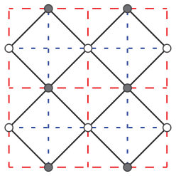
<figcaption class="paper-figure-caption"><b>Fig 1.</b> FIG. 1. Minimal two-sublattice square-lattice model used in the linear spin-wave calculation. Solid, red dashed, and blue dotted bonds denote J, Jd, and Jnm, respectively. Gray and open circles denote the A and B sublattices, respectively. The primitive lattice vectors are a1 = 2a ˆx and a2 = 2a ˆy.</figcaption>
</figure>
</div>

<p><strong>Summary.</strong> This theoretical work establishes fundamental symmetry constraints and precise frequency-moment sum rules governing the antisymmetric part of the dynamical spin structure factor. By analyzing these constraints using magnetic space groups, the authors predict which types of magnetic excitations are allowed or forbidden in various ordered magnets like helices and antiferromagnets. This provides powerful diagnostic tools for interpreting inelastic neutron scattering data.</p>
<p><strong>Why it may be interesting.</strong> While focused on magnetism, the rigorous application of group theory symmetries to derive exact spectral properties and sum rules is a powerful general technique applicable to any quantum many-body system where symmetry dictates observable selection rules.</p>
<details>
<summary>Detailed structure</summary>
<p><strong>Main problem.</strong> The paper derives symmetry constraints and exact zero-temperature sum rules for the spin-component-antisymmetric part of the dynamical spin-structure-factor tensor.</p>
<p><strong>Main result.</strong> These symmetries dictate selection rules for magnetic excitations, allowing finite spectral weight even when zeroth or first frequency moments vanish under specific crystal/spin symmetries.</p>
<p><strong>Method.</strong> The analysis uses group theory applied to residual unitary and antiunitary operations of magnetic space groups and spin-space groups, combined with linear spin-wave calculations.</p>
<p><strong>Model / system.</strong> The framework is applied to general magnetic systems, including collinear antiferromagnets, rotation-related altermagnets, and planar helical magnets (e.g., on a triangular lattice).</p>
<p><strong>Key observables.</strong> Antisymmetric dynamical spin-structure-factor tensor ($C_{\alphaeta}(\mathbf{q}, \omega)$), commutator spectral function $A_{\alphaeta}^{	ext{as}}(\mathbf{q}, \omega)$, and its frequency moments ($M^0, M^1$).</p>
<p><strong>Important parameters / regimes.</strong> Zero temperature ($T=0$), momentum ($\mathbf{q}$), and the specific symmetry operations (unitary/antiunitary).</p>
<p><strong>Assumptions / limitations.</strong> The analysis relies on deriving constraints from residual space group symmetries; some calculations use linear spin-wave theory approximations.</p>
<p><strong>Figures summary.</strong> Not specified in the notes, but the text discusses explicit realizations of these constraints via LSWT for helical magnets and general symmetry rules for different magnetic types.</p>
<p><strong>Paper structure.</strong> The paper first defines the antisymmetric DSF, then derives general symmetry constraints using space groups, establishes moment sum rules (zeroth and first moments), and finally applies this framework to specific models like collinear antiferromagnets and planar helices.</p>
</details>
<details>
<summary>Abstract</summary>
<p>Polarized inelastic neutron scattering probes the handedness of magnetic excitations through the spin-component-antisymmetric part of the dynamical spin-structure-factor tensor. We derive its symmetry constraints under unitary and antiunitary residual operations of magnetic space groups and spin-space groups. These constraints determine the allowed tensor components, their parity under momentum reversal, and symmetry-enforced nodes. We then introduce the corresponding antisymmetric commutator spectral function and derive exact zero-temperature sum rules for its frequency moments. The zeroth moment is fixed by the uniform magnetization. For Heisenberg or XXZ exchange Hamiltonians, the first moment of the $xy$ component is fixed by a momentum-weighted static vector chirality. For compensated collinear antiferromagnets, the antisymmetric dynamical structure factor is forbidden when inversion or a translation relates the opposite-spin sublattices. In rotation-related altermagnets, however, an $xy$ component that is even under momentum reversal is allowed at generic wave vectors. Finite antisymmetric spectral weight can therefore coexist with vanishing zeroth and first moments of the commutator spectral function. In a planar helix, by contrast, a residual antiunitary spin-space-group symmetry makes the allowed $xy$ component odd under momentum reversal. Its first moment is generally nonzero and is fixed by a momentum-weighted static vector chirality through the first-moment sum rule. Linear spin-wave calculations for representative altermagnetic and helical models explicitly realize these symmetry and sum-rule constraints.</p>
</details>
<p><sub><a href="#top">↑ back to top</a></sub></p>

<p><a id="paper-2608.03770"></a></p>
<h3 id="analytical-results-of-typical-medium-theory-for-the-bethe-lattice-with-cauchy-disorder"><a href="http://arxiv.org/abs/2608.03770v1">Analytical results of Typical Medium Theory for the Bethe lattice with Cauchy disorder</a></h3>
<p><strong>Authors:</strong> A. Östlin, I. Titvinidze, M. Kollar, D. Jones, L. Chioncel<br>
<strong>Type:</strong> theory · <strong>Category:</strong> disordered systems and neural networks · <strong>PDF:</strong> <a href="https://arxiv.org/pdf/2608.03770v1">https://arxiv.org/pdf/2608.03770v1</a><br>
<strong>Analysis basis:</strong> full PDF text, analyzed in chunks
<strong>Topic relevance:</strong> <code>Keldysh / 2PI / non-Gaussian methods</code> <strong>1/5</strong> · <code>Kondo &amp; dissipative impurity</code> <strong>1/5</strong></p>
<div class="figure-strip-hint">↔ Scroll figures horizontally</div>
<div class="paper-figures-scroll">
<figure class="paper-figure-card">
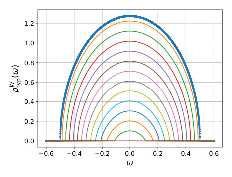
<figcaption class="paper-figure-caption"><b>Fig 1.</b> Figure 1. Typical density of states (TDOS) ρW typ on the Bethe lattice for Cauchy-distributed disorder and different disorder strengths W, equally spaced between 0.01 and 0.25. The blue curve with symbols corresponds to the DOS of the clean Bethe lattice. The half-bandwidth is D = 0.5.</figcaption>
</figure>
<figure class="paper-figure-card">
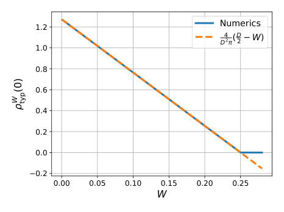
<figcaption class="paper-figure-caption"><b>Fig 2.</b> Figure 2. TDOS ρW typ(ω) at ω = 0 as a function of the disorder strength W. The orange dashed line shows the analytical result.</figcaption>
</figure>
<figure class="paper-figure-card">
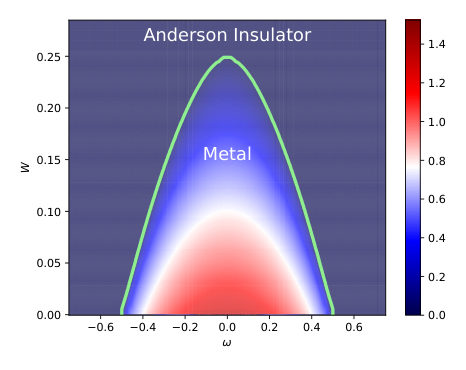
<figcaption class="paper-figure-caption"><b>Fig 3.</b> Figure 4. ω–W phase diagram for the Bethe lattice with Cauchy-distributed disorder. The green curve denotes the mobility edge separating the metallic and localized (insulating) phases. The color map shows the TDOS ρW typ(ω).</figcaption>
</figure>
<figure class="paper-figure-card">
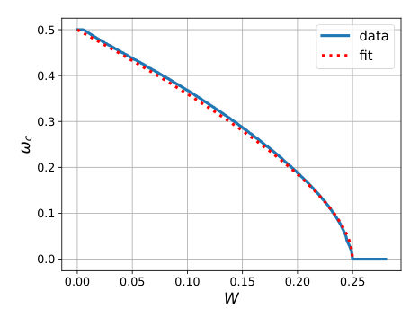
<figcaption class="paper-figure-caption"><b>Fig 4.</b> Figure 3. Mobility edge ωc as a function of the disorder strength W for the Bethe lattice with Cauchy-distributed disorder. For |ω| &gt; ωc, the TDOS vanishes, ρW typ(ω) = 0. The dotted red line corresponds to a fit obtained from Eq. (8), with the fitting parameters a = 0.6874.</figcaption>
</figure>
<figure class="paper-figure-card">
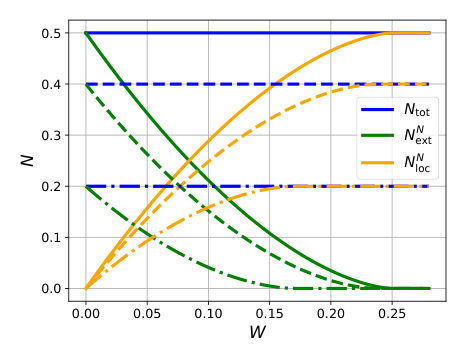
<figcaption class="paper-figure-caption"><b>Fig 5.</b> Figure 5. Number of extended and localized states, N W ext and N W loc, as a function of the disorder strength W for the Bethe lattice with Cauchy-distributed disorder. Results are shown at three fillings: half-filling (solid lines), Ntot = 0.4 (dashed lines), and Ntot = 0.2 (dash-dotted lines). The color coding of the curves is given in the legend.</figcaption>
</figure>
</div>

<p><strong>Summary.</strong> This paper develops an analytical framework using Typical Medium Theory (TMT) to study Anderson localization on the Bethe lattice with Cauchy disorder. The authors derive key results showing that the typical density of states vanishes linearly at a critical disorder strength, signaling the continuous collapse of extended electronic states. This work provides quantitative insights into the metal-insulator transition in highly disordered quantum systems.</p>
<p><strong>Why it may be interesting.</strong> The rigorous application of TMT to characterize localization transitions provides powerful analytical tools applicable to understanding spectral properties in disordered quantum materials.</p>
<details>
<summary>Detailed structure</summary>
<p><strong>Main problem.</strong> The study aims to characterize the Anderson localization transition (metal-insulator transition) in a disordered quantum system.</p>
<p><strong>Main result.</strong> The typical density of states at the band center decreases linearly with disorder strength and vanishes at a critical disorder $W_c = D/2$, indicating continuous collapse of extended states.</p>
<p><strong>Method.</strong> The authors employ Typical Medium Theory (TMT), which uses the geometric average of local quantities, to analyze the Anderson Hamiltonian on an infinite-connectivity Bethe lattice.</p>
<p><strong>Model / system.</strong> The system is non-interacting spin-less fermions hopping on a Bethe lattice subjected to random on-site energies drawn from a Cauchy distribution. The model is described by an Anderson Hamiltonian.</p>
<p><strong>Key observables.</strong> Typical Density of States ($
ho_{W}^{    ext{typ}}(\omega)$), Mobility Edge ($\omega_c$), Number of Extended/Localized States ($N_{W}^{  ext{ext}}, N_{W}^{  ext{loc}}$).</p>
<p><strong>Important parameters / regimes.</strong> Disorder strength ($W$), Disorder bandwidth parameter ($D$).</p>
<p><strong>Assumptions / limitations.</strong> The primary approximation is the use of Typical Medium Theory (TMT) over the conventional CPA, and analytical derivations rely on specific algebraic simplifications afforded by the Cauchy distribution.</p>
<p><strong>Figures summary.</strong> Figure 1 numerically shows the typical density of states ($
ho_{W}^{    ext{typ}}$) for varying disorder strengths, illustrating its suppression and the shrinking energy interval.</p>
<p><strong>Paper structure.</strong> The paper establishes the TMT self-consistency loop for this specific system. It derives analytical expressions for key observables like $
ho_{W}^{    ext{typ}}(0)$ and $\omega_c$, analyzing the continuous transition from extended to localized states, and deriving approximate forms for the imaginary part of the self-energy ($\Sigma_I$).</p>
</details>
<details>
<summary>Abstract</summary>
<p>We present a combined numerical and analytically tractable realization of the typical medium theory (TMT) for Anderson localization on the infinite-connectivity Bethe lattice with Cauchy-distributed on-site disorder. Exploiting the special properties of the Cauchy distribution and the Bethe lattice, we derive an analytical expression for the typical density of states (TDOS) and obtain a simplified TMT self-consistency scheme. We show that the TDOS at the band center decreases linearly with disorder strength and vanishes at the critical disorder $W_c=D/2$. The resulting $ω$--$W$ phase diagram reveals the continuous collapse of the mobility edge and the disappearance of extended states.</p>
</details>
<p><sub><a href="#top">↑ back to top</a></sub></p>

<p><a id="paper-2608.03458"></a></p>
<h3 id="fibonacci-number-systems-and-the-localization-criterion-in-the-many-body-aubry-andre-model"><a href="http://arxiv.org/abs/2608.03458v1">Fibonacci number systems and the localization criterion in the many-body Aubry-André model</a></h3>
<p><strong>Authors:</strong> Balázs Hetényi<br>
<strong>Type:</strong> theory · <strong>Category:</strong> disordered systems and neural networks · <strong>PDF:</strong> <a href="https://arxiv.org/pdf/2608.03458v1">https://arxiv.org/pdf/2608.03458v1</a><br>
<strong>Analysis basis:</strong> full PDF text, analyzed in chunks
<strong>Topic relevance:</strong> <code>Frenkel-Kontorova</code> <strong>1/5</strong> · <code>analog quantum simulation</code> <strong>1/5</strong></p>
<div class="figure-strip-hint">↔ Scroll figures horizontally</div>
<div class="paper-figures-scroll">
<figure class="paper-figure-card">
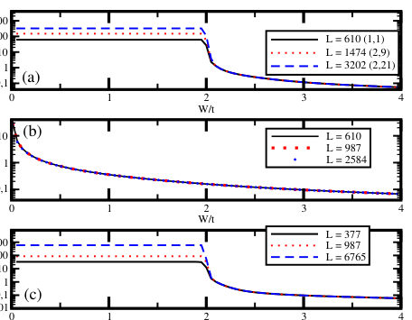
<figcaption class="paper-figure-caption"><b>Fig 1.</b> FIG. 1. Numerical results for the variance (centered second moment) of the polarization (M2) as a function of the poten- tial strength (W/t) for three particle densities (a) ρ = 1 2, (b) ρ = 2 1+ √</figcaption>
</figure>
<figure class="paper-figure-card">
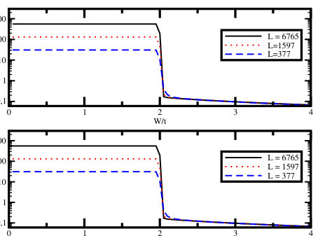
<figcaption class="paper-figure-caption"><b>Fig 2.</b> FIG. 2. Centered variance of the polarization for (a) γ+ and (b) γ−(see Eq. (22)). γ+ and γ−differ from Fn−1</figcaption>
</figure>
</div>

<p><strong>Summary.</strong> This paper applies an extension of the Fibonacci number system, called the fractional Fibonacci number system, to analyze localization in the Aubry-André model. It establishes that the nature of the particle density dictates whether the system undergoes a metal-insulator transition at $W=2t$ or remains localized even for small potentials. The work provides a mathematical framework for classifying critical behavior in quasiperiodic quantum systems.</p>
<p><strong>Why it may be interesting.</strong> This work bridges deep mathematical concepts (number systems like Fibonacci bases) directly into condensed matter physics to predict critical behavior (localization transitions), offering a novel theoretical tool for analyzing quasiperiodic systems beyond standard band theory.</p>
<details>
<summary>Detailed structure</summary>
<p><strong>Main problem.</strong> The paper investigates how number theoretic properties, specifically using Fibonacci number systems, can be employed to interpret the localization phase diagram of the many-body Aubry-André model.</p>
<p><strong>Main result.</strong> The localization behavior depends critically on whether the particle density is rational or irrational; certain irrational densities exhibit different transition points ($W=0$ vs $W=2t$) compared to others.</p>
<p><strong>Method.</strong> The authors introduce and utilize a 'fractional Fibonacci number system' to represent particle densities ($
ho = N/L$), allowing for a systematic classification of localization regimes in the thermodynamic limit.</p>
<p><strong>Model / system.</strong> The study focuses on the many-body non-interacting Aubry-André model, characterized by a Hamiltonian involving hopping strength ($t$) and a quasiperiodic potential strength ($W$). The analysis is performed across varying particle densities ($
ho = N/L$).</p>
<p><strong>Key observables.</strong> Localization criterion (change in density representation as $L 	o \infty$), variance of polarization ($M_2$), and the transition point between metallic and insulating phases.</p>
<p><strong>Important parameters / regimes.</strong> Potential strength ($W$) relative to hopping strength ($t$); particle density ($
ho$).</p>
<p><strong>Assumptions / limitations.</strong> Periodic boundary conditions are assumed; the classification based on base-$\varphi$ is noted to lose strict meaning in the true thermodynamic limit, depending on the approach path.</p>
<p><strong>Figures summary.</strong> Figure 1 shows numerical variance results for three different densities (rational, golden ratio irrational, other irrational) demonstrating size dependence changes at $W/t=2$. Figure 2 compares polarization variance for $\gamma^+$ and $\gamma^-$ approaching a limit, showing a transition at $W=2t$ for finite systems.</p>
<p><strong>Paper structure.</strong> The paper introduces the fractional Fibonacci number system to analyze the Aubry-André model. It derives localization criteria based on density representation (Zeckendorf/base-$\varphi$) and compares results for different types of densities, concluding with a discussion on the limitations in the thermodynamic limit.</p>
</details>
<details>
<summary>Abstract</summary>
<p>We introduce an extension of the Fibonacci number system, we call the fractional Fibonacci number system, which interpolates between the Fibonacci number system (used for natural numbers) and the irrational base-$φ$ number system, which can be used to represent real numbers. The number system finds its use in interpreting the localization phase diagram of the many-body non-interacting Aubry-André model. For finite system sizes a localization criterion can be obtained if the particle density is written in the fractional Fibonacci number system. In the thermodynamic limit, the criterion remains, but in this case the particle density is expressed in base-$φ$. The nature of the thermodynamic limit is also discussed.</p>
</details>
<p><sub><a href="#top">↑ back to top</a></sub></p>

<p><a id="paper-2608.03873"></a></p>
<h3 id="high-level-quantum-structured-programs-as-quantum-registers-compositions"><a href="http://arxiv.org/abs/2608.03873v1">High-level quantum structured programs as quantum registers compositions</a></h3>
<p><strong>Authors:</strong> David Chamizo, Jose Garcia-Alonso, Juan M. Murillo<br>
<strong>Type:</strong> theory · <strong>Category:</strong> quantum information and computing · <strong>PDF:</strong> <a href="https://arxiv.org/pdf/2608.03873v1">https://arxiv.org/pdf/2608.03873v1</a><br>
<strong>Analysis basis:</strong> full PDF text, analyzed in chunks
<strong>Topic relevance:</strong> <code>analog quantum simulation</code> <strong>1/5</strong> · <code>entanglement &amp; information structure</code> <strong>1/5</strong></p>
<div class="figure-strip-hint">↔ Scroll figures horizontally</div>
<div class="paper-figures-scroll">
<figure class="paper-figure-card">
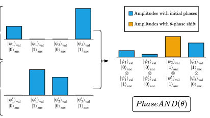
<figcaption class="paper-figure-caption"><b>Fig 1.</b> Fig. 1. Representation of the PhaseAND(θ) operation functionality on two register with one constraint each. On the right, those states without amplitude contribution are suppressed for simplification. Bars height is an arbitrary depiction of amplitude absolute values while color is related to relative phase.</figcaption>
</figure>
<figure class="paper-figure-card">
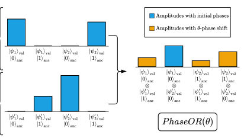
<figcaption class="paper-figure-caption"><b>Fig 2.</b> Fig. 2. Representation of the PhaseOR(θ) operation functionality on two register with one constraint each. On the right, those states without amplitude contribution are suppressed for simplification. Bars height is an arbitrary depiction of amplitude absolute values while color is related to relative phase.</figcaption>
</figure>
<figure class="paper-figure-card">
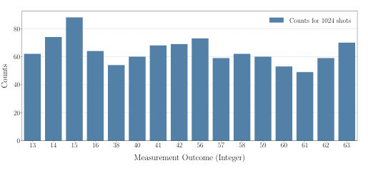
<figcaption class="paper-figure-caption"><b>Fig 3.</b> Fig. 3. Histogram representing the results obtained after evaluating Algorithm 1 for the case of Eq. (36) after 1024 shots.</figcaption>
</figure>
<figure class="paper-figure-card">
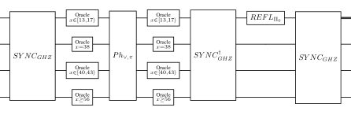
<figcaption class="paper-figure-caption"><b>Fig 4.</b> Fig. 4. Circuit derived from the high-level syntax of Algorithm 1 for the case of Eq. (36).</figcaption>
</figure>
<figure class="paper-figure-card">
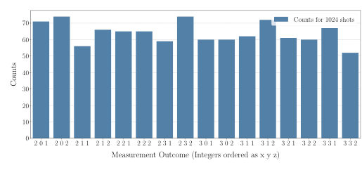
<figcaption class="paper-figure-caption"><b>Fig 5.</b> Fig. 5. Histogram representing the results obtained after evaluating Algorithm 1 for the case of Eq. (37) after 1024 shots.</figcaption>
</figure>
</div>

<p><strong>Summary.</strong> This paper addresses the complexity of writing large-scale quantum programs by proposing a high-level structured programming paradigm. It models computation not as gate sequences on individual qubits, but as transformations acting upon abstract 'quantum registers.' By formalizing this structure using an algebraic approach, it enables the design of tools like quantum SMT solvers that operate at a much higher level of abstraction.</p>
<p><strong>Why it may be interesting.</strong> This work provides theoretical tools for abstracting quantum computation beyond simple circuit diagrams, which is crucial for designing scalable algorithms and verifying complex quantum protocols relevant to AMO physics simulations.</p>
<details>
<summary>Detailed structure</summary>
<p><strong>Main problem.</strong> Current quantum programming is too low-level, requiring manual management of individual qubits and gates for complex problems, leading to high cognitive load and errors.</p>
<p><strong>Main result.</strong> The paper proposes a conceptual framework for high-level quantum structured programming by treating computation as semantically defined transformations acting on entire quantum registers.</p>
<p><strong>Method.</strong> It develops an algebraic formalism that bridges high-level syntax with low-level semantics, allowing the design of a quantum satisfiability modulo theories (SMT) solver based purely on structural operations.</p>
<p><strong>Model / system.</strong> The model views computation as operating on abstract 'quantum registers' ($\mathbf{q}$), which are treated as undivided computational entities rather than sequences of individual qubits. The formalism extends concepts like Hoare's laws to this quantum domain.</p>
<p><strong>Key observables.</strong> The focus shifts from gate sequences to the transformation and composition rules governing entire quantum registers.</p>
<p><strong>Important parameters / regimes.</strong> None explicitly stated beyond the abstract structure of the quantum registers themselves.</p>
<p><strong>Assumptions / limitations.</strong> The primary assumption is that computation can be successfully abstracted by defining transformations on register compositions, independent of underlying qubit details. The formalism's completeness regarding all possible quantum circuit laws is also noted as a limitation.</p>
<p><strong>Paper structure.</strong> The paper progresses from identifying the problem (low-level gate programming) to proposing a conceptual framework based on register composition, formalizing this with an algebraic formalism that defines recursive circuits and composition laws, culminating in the ability to use this structure for SMT solving.</p>
</details>
<details>
<summary>Abstract</summary>
<p>Current quantum programs are mainly designed at the level of quantum gates acting on individual qubits; on a large scale and for complex problems this may involve a high cognitive load on the programmer, making the program specification nontrivial and error-prone. In this context, providing quantum programming with higher abstraction mechanisms will assist in making this task more manageable and robust against design errors. In this work, a conceptual framework is addressed following the notion of the whole quantum computation as a structure composed of quantum registers representing each an undivided entity. Thus, computation progresses through semantically well-defined transformations that act on, or entangle, quantum registers, thereby modifying the global state. Ultimately, the program reaches the desired state by following a specific composition strategy. With this in mind, high-level syntax is presented through an algebraic formalism that bridges them with their low-level semantics. Proposed syntax is based on certain well-know operations used on quantum algorithms that apply phase shifts upon logical condition satisfaction or leverage on parallel evaluation. Based solely on the formalized operations, a quantum satisfiability modulo theories (SMT) solver can be designed. At its core, this work contributes to establishing some methodological principles towards realizing a high-level quantum structured programming.</p>
</details>
<p><sub><a href="#top">↑ back to top</a></sub></p>

<p><a id="paper-2608.03418"></a></p>
<h3 id="mesoscopic-quantum-communication-via-photon-number-moments"><a href="http://arxiv.org/abs/2608.03418v1">Mesoscopic Quantum Communication via Photon-Number Moments</a></h3>
<p><strong>Authors:</strong> Gabriele Cenedese, Alex Pozzoli, Luca Razzoli, Alessia Allevi<br>
<strong>Type:</strong> theory · <strong>Category:</strong> quantum information and computing · <strong>PDF:</strong> <a href="https://arxiv.org/pdf/2608.03418v1">https://arxiv.org/pdf/2608.03418v1</a><br>
<strong>Analysis basis:</strong> full PDF text, analyzed in chunks
<strong>Topic relevance:</strong> <code>entanglement &amp; information structure</code> <strong>1/5</strong> · <code>interference shaping light</code> <strong>1/5</strong></p>
<div class="figure-strip-hint">↔ Scroll figures horizontally</div>
<div class="paper-figures-scroll">
<figure class="paper-figure-card">
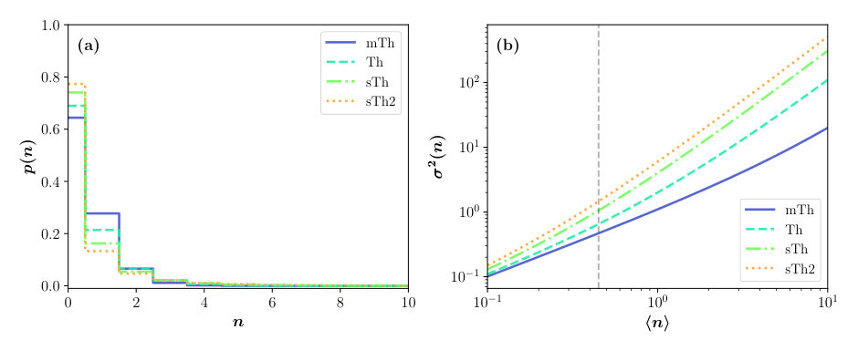
<figcaption class="paper-figure-caption"><b>Fig 1.</b> FIG. 1. (a) Photon number distributions of the multi-mode pseudo-thermal state (mTh), single-mode pseudo-thermal state (Th), super-thermal state from a speckled-speckle field (sTh), and second-harmonic of single-mode pseudo-thermal state (sTh2), all of them having a mean value ⟨n⟩= 0.45, µs = 1 for Th, STh and STh2, while µs = 10 for mTh, and µs2 = 1 for STh. (b) Variance as a function of the mean value for the same states as in panel (a); the vertical dashed line highligths ⟨n⟩= 0.45.</figcaption>
</figure>
<figure class="paper-figure-card">
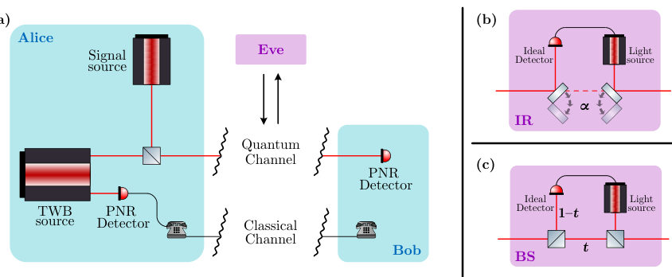
<figcaption class="paper-figure-caption"><b>Fig 2.</b> FIG. 2. (a) Sketch of the proposed communication scheme, where Alice encodes information into classical optical states of light with different photon-number distributions and sends them to Bob through a quantum channel together with the portion of a TWB state. Sketch of (b) the IR attack and (c) the BS attack performed by Eve. In (b) α is the fraction of data corresponding to a given symbol intercepted and replaced by Eve, while in (c) t is the transmissivity of the BS and (1 −t) its reflectivity.</figcaption>
</figure>
<figure class="paper-figure-card">
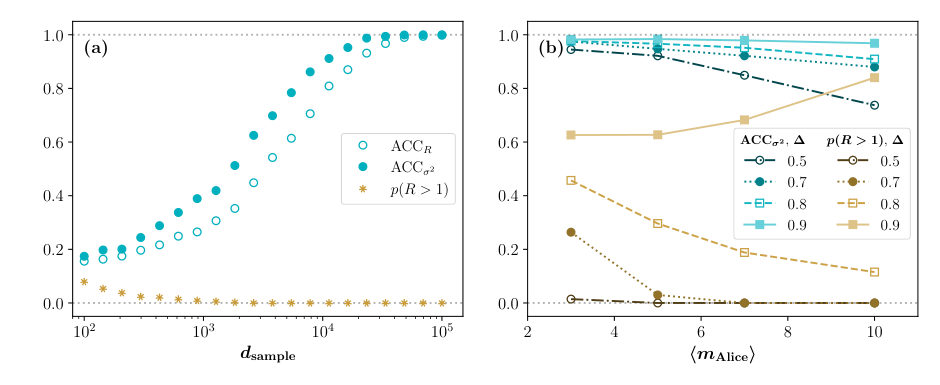
<figcaption class="paper-figure-caption"><b>Fig 3.</b> FIG. 3. (a) Bob’s discrimination accuracies ACCσ2, ACCR, and p(R &gt; 1) as a function of the data sample size dsample per symbol, for loss ∆= 0.5 and mean photon number of the TWB ⟨mAlice⟩= 5. (b) Bob’s ACCσ2 and p(R &gt; 1) as a function of ⟨mAlice⟩, for dsample = 2 × 104 and varying ∆. In both panels, blue tones refer to ACC, while brown tones refer to p(R &gt; 1). The superimposed signals have mean values ⟨ms,L⟩= 0.40 and ⟨ms,H⟩= 0.45.</figcaption>
</figure>
<figure class="paper-figure-card">
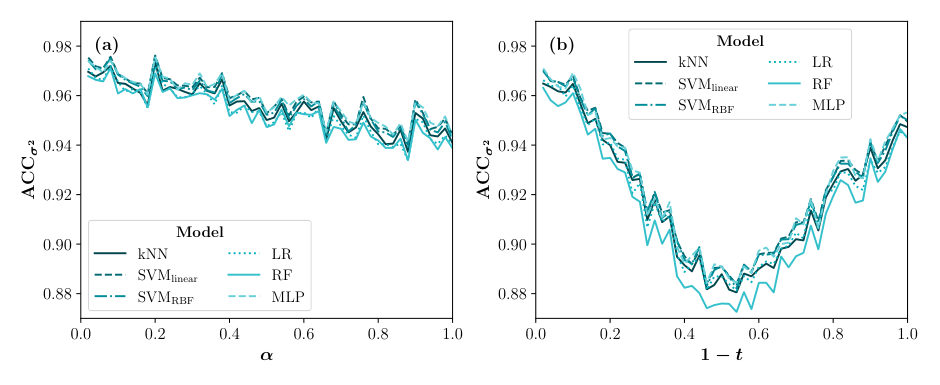
<figcaption class="paper-figure-caption"><b>Fig 4.</b> FIG. 4. (a) Bob’s discrimination accuracy ACCσ2 as a function of the fraction of intercepted data α in the IR attack and (b) as a function of the BS reflectivity (1 −t) in the BS attack. Different colors and line styles correspond to different classifiers: k-Nearest Neighbors (kNN), Linear Support Vector Machine (SVMlinear), Support Vector Machine with Radial Basis Function kernel (SVMRBF), Logistic Regression (LR), Random Forest (RF), and Multi-Layer Perceptron (MLP). In all panels the parameters are ⟨ms,L⟩= 0.40, ⟨ms,H⟩= 0.45, ⟨mAlice⟩= 5, ∆= 0.5, and dsample = 2 × 104.</figcaption>
</figure>
<figure class="paper-figure-card">
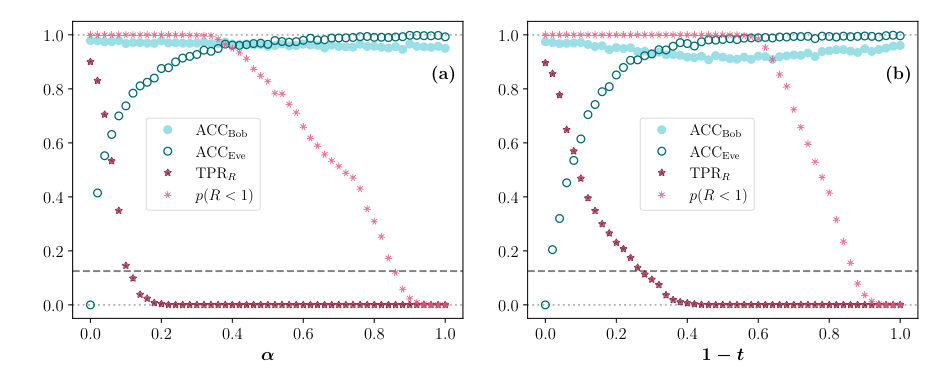
<figcaption class="paper-figure-caption"><b>Fig 5.</b> FIG. 5. Bob’s (dots) and Eve’s (open circles) discrimination accuracy ACCσ2 as a function of (a) α in the IR attack and (b) (1 −t) in the BS attack. The dashed line indicates the accuracy of the random classifier, namely ACC = 1/8. Security-related figures of merit based on the noise reduction factor R are the probability that Bob measures nonclassical correlations p(R &lt; 1) (asterisks) and the TPRR (stars). In both panels, the parameters are ⟨ms,L⟩= 0.40, ⟨ms,H⟩= 0.45, ⟨mAlice⟩= 5, ∆= 0.5, and dsample = 2 × 104.</figcaption>
</figure>
</div>

<p><strong>Summary.</strong> The authors propose a secure quantum communication protocol using mesoscopic optical states encoded via the first and second moments of photon number distributions. Security is guaranteed by utilizing the nonclassical correlations present in an accompanying twin-beam state resource against common eavesdropping attacks. The numerical simulations confirm that this approach maintains key generation rates, suggesting feasibility for future experimental realization.</p>
<p><strong>Why it may be interesting.</strong> This work directly addresses quantum key distribution in a high-loss regime by leveraging classical state properties combined with nonclassical entanglement resources, which is highly relevant to practical quantum networking research.</p>
<details>
<summary>Detailed structure</summary>
<p><strong>Main problem.</strong> To propose a quantum communication protocol that enhances robustness against photon loss by encoding information in mesoscopic optical states.</p>
<p><strong>Main result.</strong> The protocol is shown to be secure against intercept-resend and beam-splitting attacks, yielding non-zero key generation rates under numerical simulation.</p>
<p><strong>Method.</strong> Information is encoded using the first and second moments of photon-number distributions ($\langle n 
angle$ and $ ext{Var}(n)$) of classical states superimposed on a twin-beam state.</p>
<p><strong>Model / system.</strong> The system utilizes mesoscopic optical states, specifically multi-mode twin-beam (TWB) states generated via spontaneous parametric down-conversion, requiring Photon-Number-Resolving (PNR) detectors for implementation.</p>
<p><strong>Key observables.</strong> Photon-number moments ($\langle n 
angle$, $  ext{Var}(n)$), the noise reduction factor ($R$), and the Key Generation Rate (KGR).</p>
<p><strong>Important parameters / regimes.</strong> Mesoscopic intensity regime, detection efficiency ($\eta=0.4$), TWB mean photon number ($\langle m_{Alice} 
angle$ in $[3.0, 10.0]$).</p>
<p><strong>Assumptions / limitations.</strong> The analysis assumes the use of PNR detectors and that security relies on exploiting nonclassical correlations inherent to the twin-beam resource.</p>
<p><strong>Figures summary.</strong> Figure 1 illustrates photon number distributions and variances for various pseudo-thermal states versus $\langle n 
angle$. Figure 2 sketches the proposed communication scheme alongside models for intercept-resend and beam-splitting attacks.</p>
<p><strong>Paper structure.</strong> The paper establishes the problem by proposing an encoding based on moments, derives security witnesses using TWB correlations ($R<1$), analyzes performance metrics (TPR, KGR) against specific eavesdropping attacks, and concludes with feasibility statements for experimental implementation.</p>
</details>
<details>
<summary>Abstract</summary>
<p>Mesoscopic optical states are a promising resource for quantum communication, combining robustness against losses with the preservation of genuine quantum features. Here, we propose a quantum communication protocol in which information is encoded in the first and second moments of the photon-number distributions of classical optical states, and then decoded by photon-number-resolving detectors. Security relies on the nonclassical photon-number correlations of a twin-beam state transmitted alongside the signal in the quantum channel, providing an experimentally accessible security witness against both intercept-resend and beam-splitter attacks investigated in this work. Numerical simulations performed in experimentally accessible parameter regimes support the feasibility and security of the proposed communication protocol, yielding nonzero key generation rates under the considered eavesdropping attacks, and motivating its future experimental implementation.</p>
</details>
<p><sub><a href="#top">↑ back to top</a></sub></p>

<p><a id="paper-2608.03755"></a></p>
<h3 id="uncovering-non-gaussianity-through-multi-copy-symmetries"><a href="http://arxiv.org/abs/2608.03755v1">Uncovering Non-Gaussianity through Multi-Copy Symmetries</a></h3>
<p><strong>Authors:</strong> Hao Dai, Yue Zhang<br>
<strong>Type:</strong> both · <strong>Category:</strong> quantum information and computing · <strong>PDF:</strong> <a href="https://arxiv.org/pdf/2608.03755v1">https://arxiv.org/pdf/2608.03755v1</a><br>
<strong>Analysis basis:</strong> full PDF text, analyzed in chunks
<strong>Topic relevance:</strong> <code>Keldysh / 2PI / non-Gaussian methods</code> <strong>1/5</strong> · <code>entanglement &amp; information structure</code> <strong>1/5</strong></p>
<div class="figure-strip-hint">↔ Scroll figures horizontally</div>
<div class="paper-figures-scroll">
<figure class="paper-figure-card">

<figcaption class="paper-figure-caption"><b>Fig 1.</b> Low-resolution page preview, page 2</figcaption>
</figure>
<figure class="paper-figure-card">

<figcaption class="paper-figure-caption"><b>Fig 2.</b> Low-resolution page preview, page 3</figcaption>
</figure>
<figure class="paper-figure-card">

<figcaption class="paper-figure-caption"><b>Fig 3.</b> Low-resolution page preview, page 4</figcaption>
</figure>
<figure class="paper-figure-card">

<figcaption class="paper-figure-caption"><b>Fig 4.</b> Low-resolution page preview, page 5</figcaption>
</figure>
<figure class="paper-figure-card">

<figcaption class="paper-figure-caption"><b>Fig 5.</b> Low-resolution page preview, page 6</figcaption>
</figure>
</div>

<p><strong>Summary.</strong> This paper introduces a novel group-theoretic approach using multi-copy symmetries to diagnose non-Gaussianity in bosonic quantum states. By analyzing how copy-mixing transformations interact with Gaussian unitaries, the authors derive necessary symmetry identities that all Gaussian states must obey. Violation of these identities provides a concrete and experimentally testable witness for non-Gaussian character.</p>
<p><strong>Why it may be interesting.</strong> This provides a powerful, mathematically rigorous tool rooted in symmetry theory (group theory) to detect non-Gaussianity in continuous variable systems, which is highly relevant for quantum optics and quantum information processing.</p>
<details>
<summary>Detailed structure</summary>
<p><strong>Main problem.</strong> The primary challenge is developing a robust method to characterize non-Gaussianity in continuous-variable quantum states, as traditional witnesses struggle due to the non-convex nature of Gaussian sets.</p>
<p><strong>Main result.</strong> The authors developed a group-theoretic, multi-copy symmetry framework where violating specific identities derived from copy-mixing transformations certifies that a state is non-Gaussian.</p>
<p><strong>Method.</strong> The method analyzes how passive linear optical transformations mixing multiple copies of a quantum state commute with Gaussian unitaries applied to each copy, leading to symmetry constraints violated by non-Gaussian states.</p>
<p><strong>Model / system.</strong> The work focuses on bosonic systems (single-mode and multi-mode) described by continuous variables, utilizing concepts from Lie groups like the Heisenberg group and symplectic transformations.</p>
<p><strong>Key observables.</strong> Non-Gaussianity witnesses derived from symmetry constraints; specific multi-copy expectation values $  ext{Tr}(
ho^{\otimes k}\Gamma_d(O))$ compared against Gaussian reference values $W_G(O)$.</p>
<p><strong>Important parameters / regimes.</strong> The number of copies ($k$), the thermal reference parameter (fixed via purity), and parameters defining the covariance matrix ($\sigma$) are crucial.</p>
<p><strong>Assumptions / limitations.</strong> The analysis assumes that the relevant symmetry structure can be captured by analyzing commutators involving copy-mixing transformations and Gaussian unitaries, which is extended to multi-mode systems.</p>
<p><strong>Paper structure.</strong> The paper progresses from identifying the difficulty of non-Gaussianity witnesses to developing a group-theoretic framework based on copy-mixing symmetries. It derives specific commutation relations for Gaussian states and then proposes using violations of these identities as quantitative detectors, culminating in an experimental protocol.</p>
</details>
<details>
<summary>Abstract</summary>
<p>Gaussian states are fundamental in continuous-variable quantum information, yet characterizing non-Gaussianity remains challenging due to the non-convexity of the Gaussian set. Existing witnesses typically rely on Wigner negativity or other information-theoretic quantities. In this work, we develop a group-theoretic, multi-copy approach to detect non-Gaussianity in bosonic systems. We study passive linear optical transformations that mix copies of a quantum state and analyze their commutation with identical Gaussian unitaries applied to each copy. Orthogonal copy-mixing transformations commute with the symplectic part of the Gaussian action, while the displacement part restricts the symmetry to the stabilizer of the collective mode. This structure yields a family of witnesses satisfied by all single-mode Gaussian states. Fixing the thermal reference parameter via the purity, violation of these identities certifies non-Gaussianity. We illustrate the method with several single-mode examples and present an experimental protocol based on passive interferometry and photon-number-resolved detection, showing that the relevant multi-copy expectation values can be estimated from bounded phase observables. Finally, we extend the construction to multi-mode systems and discuss how the same symmetry framework may lead to quantitative measures of non-Gaussianity.</p>
</details>
<p><sub><a href="#top">↑ back to top</a></sub></p>

<p><a id="paper-2608.03894"></a></p>
<h3 id="accelerated-quantum-monte-carlo-simulations-of-the-attractive-hubbard-model-on-the-kagome-lattice"><a href="http://arxiv.org/abs/2608.03894v1">Accelerated quantum Monte Carlo simulations of the attractive Hubbard model on the kagome lattice</a></h3>
<p><strong>Authors:</strong> Jie Zhang, Xiang Li, Yu Wang<br>
<strong>Type:</strong> theory · <strong>Category:</strong> strongly correlated electrons · <strong>PDF:</strong> <a href="https://arxiv.org/pdf/2608.03894v1">https://arxiv.org/pdf/2608.03894v1</a><br>
<strong>Analysis basis:</strong> full PDF text, analyzed in chunks
<strong>Topic relevance:</strong> <code>analog quantum simulation</code> <strong>1/5</strong></p>
<div class="figure-strip-hint">↔ Scroll figures horizontally</div>
<div class="paper-figures-scroll">
<figure class="paper-figure-card">

<figcaption class="paper-figure-caption"><b>Fig 1.</b> FIG. 2. (a) Percentages of the computational time occupied by each process in our simulations at different system sizes L. (b) The total computational time is shown on a log-log scale for different system sizes L. The blue dashed line indicates the O(N 3) reference scaling (N = 3L2), while the red dashed line shows a linear fit within the range 12 ⩽L ⩽27. The simulations are performed for a represen- tative parameter set with U = −5.0 and ρ = 2 3, using 50 warmup steps, 50 measure steps and a projection length of β = 10.</figcaption>
</figure>
<figure class="paper-figure-card">

<figcaption class="paper-figure-caption"><b>Fig 2.</b> FIG. 1. Average computational time per matrix-matrix multiplication as a function of the system size L on the kagome lattice. The compu- tational time is shown on a log-log scale at different system sizes L for the standard dense matrix multiplication (DGEMM) and the FFT- accelerated matrix multiplication. Dashed lines represent linear fits.</figcaption>
</figure>
<figure class="paper-figure-card">

<figcaption class="paper-figure-caption"><b>Fig 3.</b> FIG. 4. χ2 minimization for determining the critical parameters. (a) The color map of χ2 in the (ν, |U|c) parameter plane. The yellow star marks the minimum of χ2 at |U|c = 4.79(1) and ν = 0.88(3). (b) Corresponding fit for the critical exponent ζ, using the optimal |U|c and ν from (a). The minimum (red star) marks ζ = −0.68(2). Dashed lines in both panels represent the standard errors for the cor- responding parameters.</figcaption>
</figure>
<figure class="paper-figure-card">

<figcaption class="paper-figure-caption"><b>Fig 4.</b> FIG. 3. (a) The correlation ratio RPair as a function of |U| for differ- ent system sizes L at the Dirac filling ρ = 2</figcaption>
</figure>
<figure class="paper-figure-card">

<figcaption class="paper-figure-caption"><b>Fig 5.</b> FIG. 6. Finite-size extrapolations of the CDW order parameters at the wave vector of (a) Γ and (b) K at |U| = 8.0 for different fillings ρ. All data points are obtained with 1000 warm steps, 1000 measure steps, and projection length β = 30. Quadratic fitting is applied.</figcaption>
</figure>
</div>

<p><strong>Summary.</strong> This work significantly advances the study of correlated electrons on the kagome lattice by developing an FFT-accelerated Quantum Monte Carlo method. The research confirms superfluid quantum criticality at specific fillings while demonstrating that proposed CDW orders are likely artifacts of finite system size. This computational breakthrough allows for precise determination of critical exponents.</p>
<p><strong>Why it may be interesting.</strong> The development of an $N^{2.49}$ computational scaling for a complex QMC simulation is highly relevant, providing access to larger systems than previously possible for studying quantum critical points in lattice models.</p>
<details>
<summary>Detailed structure</summary>
<p><strong>Main problem.</strong> The study investigates interaction-driven correlated states, specifically the competition between superfluid (SF) and charge-density-wave (CDW) orders on the kagome lattice.</p>
<p><strong>Main result.</strong> Large-scale simulations reveal zero-temperature superfluid quantum criticality at the Dirac filling, while evidence suggests that previously proposed CDW orders are likely finite-size effects.</p>
<p><strong>Method.</strong> The authors developed and applied an accelerated Determinant Quantum Monte Carlo (DQMC) scheme combining FFT techniques with delay-update algorithms to overcome previous computational limitations.</p>
<p><strong>Model / system.</strong> The system is the attractive Hubbard model defined on the kagome lattice, characterized by a Hamiltonian involving nearest-neighbor hopping ($t$) and an attractive interaction ($U < 0$).</p>
<p><strong>Key observables.</strong> Superfluid order parameter (P), correlation ratio ($R_{	ext{Pair}}$), and momentum-dependent CDW order parameter ($D(\vec{Q})$).</p>
<p><strong>Important parameters / regimes.</strong> Dirac filling ($
ho = 2/3$), critical interaction $|U|_c \approx 4.79$, and system sizes up to $L=24$.</p>
<p><strong>Assumptions / limitations.</strong> The primary assumption is that the accelerated DQMC scheme accurately models the physics, allowing for reliable finite-size scaling analyses.</p>
<p><strong>Figures summary.</strong> Figures compare computational time scaling (FFT vs. DGEMM) and show data collapse for SF order parameters at $
ho=2/3$. Other figures illustrate finite-size extrapolations of CDW order parameters at wave vectors $\Gamma$ and K.</p>
<p><strong>Paper structure.</strong> The paper details the model setup, introduces the FFT-accelerated DQMC methodology (combining FFT with delay updates), presents results on SF criticality via finite-size scaling, and concludes by analyzing the stability of various CDW states.</p>
</details>
<details>
<summary>Abstract</summary>
<p>The recent discovery of several families of kagome materials and experimental realization of optical kagome lattices have stimulated growing numerical studies of interaction-driven correlated states on the kagome lattice. Among the available numerical approaches, determinant quantum Monte Carlo (DQMC) is a powerful method for investigating such strongly correlated states. However, the accessible system sizes of existing DQMC simulations remain limited, preventing reliable finite-size scaling analyses. Here we develop a general acceleration scheme based on fast Fourier transform (FFT) for propagator multiplications on composite lattices and combine it with the delay-update algorithm, enabling simulations on system sizes twice as large as those of previous DQMC studies, allowing reliable finite-size scaling analyses of the attractive kagome-lattice Hubbard model. Our large-scale simulations reveal the interaction-driven zero-temperature superfluid quantum criticality at the Dirac filling and provide reliable estimates of the associated critical exponents. Besides, we find no evidence that the previously proposed triangle-rule charge-density-wave order survives in the thermodynamic limit, suggesting that it is likely a finite-size effect. Moreover, for system sizes accessible in current two-dimensional optical lattice experiments, the combined FFT and delay-update scheme exhibits an effective computational cost scaling as $N^{2.49}$, substantially below the $\mathcal{O}(N^3)$ computational cost of conventional DQMC simulations.</p>
</details>
<p><sub><a href="#top">↑ back to top</a></sub></p>

<p><a id="paper-2608.03698"></a></p>
<h3 id="fidelity-based-robustness-margins-for-finite-time-quantum-control"><a href="http://arxiv.org/abs/2608.03698v1">Fidelity-Based Robustness Margins for Finite-Time Quantum Control</a></h3>
<p><strong>Authors:</strong> S. P. O'Neil, F. C. Langbein, C. A. Weidner, E. A. Jonckheere, S. Schirmer<br>
<strong>Type:</strong> theory · <strong>Category:</strong> quantum information and computing · <strong>PDF:</strong> <a href="https://arxiv.org/pdf/2608.03698v1">https://arxiv.org/pdf/2608.03698v1</a><br>
<strong>Analysis basis:</strong> full PDF text, analyzed in chunks
<strong>Topic relevance:</strong> <code>quantum measurements</code> <strong>1/5</strong></p>
<div class="figure-strip-hint">↔ Scroll figures horizontally</div>
<div class="paper-figures-scroll">
<figure class="paper-figure-card">

<figcaption class="paper-figure-caption"><b>Fig 1.</b> Fig. 1. Fidelity error versus perturbation strength for H0, H1, H2 perturbations across the controllers. The dashed line indicates the fidelity-error threshold 10−3.</figcaption>
</figure>
<figure class="paper-figure-card">

<figcaption class="paper-figure-caption"><b>Fig 2.</b> Fig. 2. Robustness margins for H0, H1, and H2 across the 61 controllers ordered by increasing nominal fidelity error ε0.</figcaption>
</figure>
<figure class="paper-figure-card">

<figcaption class="paper-figure-caption"><b>Fig 3.</b> Fig. 3. Robustness margins versus nominal differential-sensitivity magnitude |ζj| for H0 (top) and H1, H2 (bottom).</figcaption>
</figure>
</div>

<p><strong>Summary.</strong> This paper introduces a novel framework to calculate robust margins for quantum gate fidelity when system parameters are uncertain. By deriving structure-specific Lipschitz bounds, it certifies the maximum allowed perturbation size while guaranteeing the final gate fidelity stays above a set threshold. This moves beyond simple local sensitivity analysis by providing actionable safety boundaries for quantum control protocols.</p>
<p><strong>Why it may be interesting.</strong> This work provides rigorous, quantifiable guarantees on the stability of quantum gates under realistic parameter uncertainties, which is crucial for designing fault-tolerant quantum hardware and understanding experimental limitations in quantum computation.</p>
<details>
<summary>Detailed structure</summary>
<p><strong>Main problem.</strong> The paper develops a method to quantify the robustness margin for finite-time quantum control when the system Hamiltonian is subject to structured, small perturbations.</p>
<p><strong>Main result.</strong> A structure-specific fidelity-threshold robustness margin is derived, providing a certified minimum perturbation radius ensuring gate fidelity remains above a specified threshold $F_T$.</p>
<p><strong>Method.</strong> The analysis uses differential sensitivity bounds and establishes a Lipschitz constant for the fidelity function with respect to the perturbing parameter. An iterative algorithm refines this margin by taking safe steps toward the first boundary.</p>
<p><strong>Model / system.</strong> The system is a finite-dimensional closed quantum system evolving under piecewise-constant coherent control, governed by a time-dependent Hamiltonian that includes structured affine perturbations from a single scalar parameter $\mu$.</p>
<p><strong>Key observables.</strong> Normalized trace-amplitude gate fidelity ($F(t_f)$), the sensitivity of fidelity to perturbation ($\zeta_\mu^0$), and the certified robust margin ($M$).</p>
<p><strong>Important parameters / regimes.</strong> The control time horizon $t_f$, the target fidelity threshold $F_T$, and the magnitude of the structured Hamiltonian perturbations $\mu$.</p>
<p><strong>Assumptions / limitations.</strong> The analysis is restricted to scalar, one-parameter structured Hamiltonian perturbations; it does not cover simultaneous multi-parameter uncertainty or open-system dynamics.</p>
<p><strong>Figures summary.</strong> Figures illustrate fidelity error trajectories under various perturbations ($H_0, H_1, H_2$) and compare the calculated robustness margins ($M$) against the nominal differential sensitivity magnitudes ($|\zeta_j|$).</p>
<p><strong>Paper structure.</strong> The paper first establishes the theoretical framework using fidelity derivatives to derive a finite margin certificate. It then applies this method to specific three-qubit gate control examples, comparing the resulting structure-dependent margins across different perturbation types.</p>
</details>
<details>
<summary>Abstract</summary>
<p>We develop a structure-specific fidelity-threshold robustness margin for finite-dimensional closed quantum systems under piecewise-constant coherent control. A scalar physical parameter may perturb the drift, a control Hamiltonian, or another declared Hamiltonian component across the control horizon. A differential sensitivity bound for trace-amplitude gate fidelity yields a threshold-dependent Lipschitz constant on the connected safe parameter component and hence a certified finite perturbation radius. Recentering this certificate produces an iterative one-dimensional method that takes certified safe steps toward the first fidelity-threshold boundary in either parameter direction. A three-qubit gate-control example shows that these finite margins vary by up to a factor of three across controllers of comparable nominal fidelity and contain structure-dependent information not captured by nominal differential sensitivity alone.</p>
</details>
<p><sub><a href="#top">↑ back to top</a></sub></p>

<p><a id="paper-2608.02734"></a></p>
<h3 id="improved-constant-factors-for-qubitized-hamiltonian-simulation"><a href="http://arxiv.org/abs/2608.02734v1">Improved constant factors for qubitized Hamiltonian simulation</a></h3>
<p><strong>Authors:</strong> Matthew Pocrnic, Danial Motlagh<br>
<strong>Type:</strong> theory · <strong>Category:</strong> quantum information and computing · <strong>PDF:</strong> <a href="https://arxiv.org/pdf/2608.02734v1">https://arxiv.org/pdf/2608.02734v1</a><br>
<strong>Analysis basis:</strong> full PDF text, analyzed in chunks
<strong>Topic relevance:</strong> <code>analog quantum simulation</code> <strong>1/5</strong></p>
<div class="figure-strip-hint">↔ Scroll figures horizontally</div>
<div class="paper-figures-scroll">
<figure class="paper-figure-card">

<figcaption class="paper-figure-caption"><b>Fig 1.</b> FIG. 1. Comparison of degree bounds with τ := αt from Theorems 1 and 2 to the exact Bessel tail, Corollary 62 from Ref. [18], and Lemma 5 from [7] version 1. We plot the exact Bessel tail to machine precision via the clear boxes using SciPy [21] to show that the bound is tight and to further illustrate that the gap to the optimal result becomes negligible with increasing τ. To contextualize the results, for the simulation of modestly sized organic chemical reactions in first quantization, the product αt approximately satisfies αt ≈104-106 [22].</figcaption>
</figure>
</div>

<p><strong>Summary.</strong> This paper significantly improves theoretical bounds for determining the required polynomial degree ($d$) needed to simulate quantum time evolution using Quantum Signal Processing. By refining the mathematical bounding of the error tail in the Jacobi-Anger series, the authors reduce the estimated overhead for Hamiltonian simulation tasks by a factor of $e/2$. This is a crucial algorithmic refinement for quantum computing resource estimation.</p>
<p><strong>Why it may be interesting.</strong> This work provides a concrete, quantitative improvement in the resource estimation for quantum simulation algorithms, directly impacting the feasibility estimates for implementing complex dynamics on near-term quantum hardware.</p>
<details>
<summary>Detailed structure</summary>
<p><strong>Main problem.</strong> The primary goal is to improve the constant multiplicative factor determining the required polynomial degree ($d$) needed for approximating quantum time evolution operators using Quantum Signal Processing (QSP). This addresses a gap between current theoretical bounds and the optimal asymptotic constant.</p>
<p><strong>Main result.</strong> The authors derive rigorous, tighter upper bounds on $d$ by carefully analyzing the Bessel tail in the Jacobi-Anger series. This improvement reduces overhead estimates for Hamiltonian simulation tasks by a factor of approximately $e/2$.</p>
<p><strong>Method.</strong> The work combines quantum signal processing theory with advanced polynomial approximation techniques. Specifically, it employs Kapteyn's and Watson's inequalities to bound the truncation error arising from approximating the time evolution operator $e^{-i	au H}$.</p>
<p><strong>Model / system.</strong> The focus is on Hamiltonian simulation, which approximates the time-evolution operator $e^{-i	au H}$ by finding a polynomial approximation of $e^{-i	au x}$ over $[-1, 1]$. The underlying mathematical structure involves the Jacobi-Anger expansion and Bessel functions.</p>
<p><strong>Key observables.</strong> The required polynomial truncation degree ($d$), the approximation error ($\epsilon$), and the time evolution parameter ($    au$).</p>
<p><strong>Important parameters / regimes.</strong> The asymptotic regime $ au \gg 1$ is crucial, as the leading constant in the bound approaches the optimal value of 1.</p>
<p><strong>Assumptions / limitations.</strong> The analysis relies on establishing rigorous bounds for the Bessel tail using specific mathematical inequalities (Kapteyn's and Watson's).</p>
<p><strong>Figures summary.</strong> Figure 1 compares the derived degree bounds against the exact Bessel tail, demonstrating convergence towards the optimal result as $   au$ increases.</p>
<p><strong>Paper structure.</strong> The paper establishes the connection between Hamiltonian simulation and polynomial approximation via QSP. It then develops increasingly tight mathematical bounds on $d$ using successive applications of inequalities (Kapteyn's followed by Watson's) to rigorously bound the truncation error term.</p>
</details>
<details>
<summary>Abstract</summary>
<p>Quantum signal processing (QSP) serves as the asymptotically optimal technique for Hamiltonian simulation on a quantum computer. By approximating the time evolution operator via the Jacobi-Anger expansion, the Hamiltonian simulation problem reduces to a problem in polynomial approximation theory: find a sufficient degree-$d$ polynomial series to approximate $e^{-iτx}$ on $[-1,1]$ within error $ε$. While $d\in\tilde{\mathcal{O}}(τ)$ is known to be asymptotically optimal, there exists a gap between state-of-the-art bounds and the optimal constant multiplicative factor, which is approximately equal to 1. Here, we close this gap almost entirely, to the point where possible future improvements will not be of practical significance. Our improvement resides in a careful treatment of the Bessel tail in the Jacobi-Anger series using Kapteyn's and Watson's inequalities, thereby reducing the overhead estimates for all Hamiltonian simulation tasks on quantum computers by a factor of $\approx e/2$.</p>
</details>
<p><sub><a href="#top">↑ back to top</a></sub></p>

<p><a id="paper-2608.02782"></a></p>
<h3 id="quscope-an-open-source-python-framework-for-quantum-circuit-simulation-of-transmission-electron-microscopy"><a href="http://arxiv.org/abs/2608.02782v1">QuScope: An Open-Source Python Framework for Quantum-Circuit Simulation of Transmission Electron Microscopy</a></h3>
<p><strong>Authors:</strong> Sean D. Lam, Roberto dos Reis<br>
<strong>Type:</strong> theory · <strong>Category:</strong> quantum information and computing · <strong>PDF:</strong> <a href="https://arxiv.org/pdf/2608.02782v1">https://arxiv.org/pdf/2608.02782v1</a><br>
<strong>Analysis basis:</strong> full PDF text, analyzed in chunks
<strong>Topic relevance:</strong> <code>interference shaping light</code> <strong>1/5</strong></p>
<div class="figure-strip-hint">↔ Scroll figures horizontally</div>
<div class="paper-figures-scroll">
<figure class="paper-figure-card">

<figcaption class="paper-figure-caption"><b>Fig 1.</b> FIG. 1. Transfer characteristics of the optical settings used in this paper, from QuScope’s CTFCalculator at 200 kV. On the left, the TEM phase-contrast transfer function sin χ(k) at the extended Scherzer defocus ∆f = −1.2√Csλ [15] is shown for a conventional (Cs = 1.3 mm, ∆f = −685.2 ˚A) and an aberration-corrected (Cs = 0.05 mm, ∆f = −134.4 ˚A) instrument; vertical lines mark the point resolutions d = 0.66 (Csλ3)1/4 (2.50 and 1.11 ˚A). On the right, aberration-free STEM probe intensity profiles are shown for 18 and 30 mrad convergence semi-angles (FWHM 0.70 and 0.40 ˚A).</figcaption>
</figure>
<figure class="paper-figure-card">

<figcaption class="paper-figure-caption"><b>Fig 2.</b> Figure 2 shows the pipeline as implemented by QuantumCTEMCircuit. The register is prepared in the uniform superposition H⊗nq |0⟩, the plane wave ψ0 = const, after which the four optical elements act.</figcaption>
</figure>
<figure class="paper-figure-card">

<figcaption class="paper-figure-caption"><b>Fig 3.</b> FIG. 2. Quantum CTEM pipeline [Eq. (7)] for an N × N image with n = log2 N qubits per spatial register. The phase grating D[eiσV ] and lens transfer function D[eiχ] are diagonal unitaries; the two-dimensional (I)QFT acts separably on the row and column registers. For multislice simulation (Sec. V) the grating–QFT–propagator–IQFT block repeats once per slice before the lens is applied.</figcaption>
</figure>
<figure class="paper-figure-card">

<figcaption class="paper-figure-caption"><b>Fig 4.</b> FIG. 3. Quantum CTEM (POA) of a periodic graphene sheet (≈5 × 5 unit cells, 60 atoms) at 200 kV, 128 × 128 grid (14 qubits), aberration-corrected Scherzer conditions (Cs = 0.05 mm, ∆f = −134 ˚A). From left to right, the panels show the projected potential (Kirkland parametrization with Debye–Waller smearing; C–C bond 1.42 ˚A), the image intensity from the quantum circuit [Eq. (7)] showing the classic dark-atom honeycomb contrast, and the classical FFT reference. Quantum and classical fidelity | ⟨ψq|ψc⟩|2 = 1.000000. Exact statevector simulation.</figcaption>
</figure>
<figure class="paper-figure-card">

<figcaption class="paper-figure-caption"><b>Fig 5.</b> Figure 6 shows quantum multislice STEM of the same SrTiO3 [100] crystal used in Sec. V, ten unit cells thick, with an aberration-free 30 mrad probe (∆f = 0, Cs = 0) at 200 kV. One unit cell is scanned at full resolution (32 × 32 grid at 0.122 ˚A/pixel, 10 qubits) under peri- odic boundary conditions, and every scan pixel is the readout of one complete 20-slice quantum circuit, exe- cuted in exact statevector simulation. Each pixel involves state preparation of the shifted probe, then the multi- slice circuit assembled by build probe circuit (twenty phase-grating diagonal unitaries interleaved with QFT- conjugated Fresnel propagators), then the detector-plane transform with the exit...</figcaption>
</figure>
</div>

<p><strong>Summary.</strong> This paper introduces QuScope, an open-source Python framework that models the entire process of Transmission Electron Microscopy (TEM) image formation using quantum circuits. It maps electron wavefunction propagation onto quantum gates, allowing simulations of techniques like CTEM and STEM. The work validates its accuracy by matching classical results to unit fidelity while also providing crucial resource estimates for future quantum hardware implementation.</p>
<p><strong>Why it may be interesting.</strong> It provides a concrete, physics-driven application demonstrating how complex wave phenomena can be formulated as quantum circuits, offering valuable benchmarks for quantum simulation algorithms beyond standard chemistry or materials Hamiltonians.</p>
<details>
<summary>Detailed structure</summary>
<p><strong>Main problem.</strong> The core problem is simulating the complex, coherent evolution of an electron wavefunction through a specimen in Transmission Electron Microscopy (TEM).</p>
<p><strong>Main result.</strong> The authors developed QuScope, an open-source framework that successfully maps the entire TEM imaging pipeline onto quantum circuits, achieving unit fidelity with classical simulations.</p>
<p><strong>Method.</strong> The methodology involves amplitude encoding the $N 	imes N$ wavefunction into qubits and implementing physical operations (like Fresnel propagation or phase transmission) using diagonal unitaries conjugated by Quantum Fourier Transforms (QFTs).</p>
<p><strong>Model / system.</strong> The system is TEM, simulating electron wave propagation through specimens like $    ext{SrTiO}_3$. The physics maps to a quantum circuit model where optical elements are unitary gates.</p>
<p><strong>Key observables.</strong> Image intensity ($|\psi_{	ext{image}}(\mathbf{r})|^2$), state fidelity ($\langle\psi_q|\psi_c
angle|^2$), and resource estimates (gate counts, depth).</p>
<p><strong>Important parameters / regimes.</strong> Grid size ($N 	imes N$), scattering strength ($\sigma V$), and error rates for noise analysis.</p>
<p><strong>Assumptions / limitations.</strong> The framework relies on the assumption that quantum simulation can accurately model wave propagation; limitations include the exponential cost of synthesizing arbitrary diagonal unitaries and decoherence effects in deep circuits.</p>
<p><strong>Figures summary.</strong> Figures illustrate transfer characteristics, probe intensity channeling through crystalline materials ($   ext{SrTiO}_3$), and comparisons between quantum and classical multislice results.</p>
<p><strong>Paper structure.</strong> The paper introduces the problem mapping to quantum circuits, details the implementation of core components (QFTs, diagonal unitaries), validates the framework against classical simulations across various TEM techniques (CTEM, STEM), and concludes with resource estimation for near-term hardware.</p>
</details>
<details>
<summary>Abstract</summary>
<p>Image formation in transmission electron microscopy (TEM) is governed by the coherent evolution of the electron wavefunction through the specimen and the objective lens. This physics maps naturally onto the gate model of quantum computation. We present QuScope, an open-source Python framework that expresses the complete TEM image-formation pipeline as quantum circuits. The $N\times N$ electron wavefunction is amplitude-encoded in $2\log_2 N$ qubits, and every optical element, including phase-grating transmission, Fresnel propagation between specimen slices, and the aberrated objective lens, is implemented as a diagonal unitary conjugated by quantum Fourier transforms. On this foundation, QuScope v0.2.0 implements validated imaging pipelines, covering conventional TEM under the phase-object approximation, full multislice CTEM and STEM for thick specimens. All quantum results reported here come from exact, noise-free statevector simulation of the circuits on classical hardware, and every result is validated against a classical twin implementation. Quantum and classical multislice exit waves agree to unit fidelity, and all physical constants are verified against standard references. We provide transpiled quantum-resource estimates for each algorithm, an analysis of the diagonal-synthesis bottleneck that governs near-term hardware execution, and a fully tested, documented, and pip-installable package. QuScope v0.2.0 is available at https://github.com/QuScope/QuScope.</p>
</details>
<p><sub><a href="#top">↑ back to top</a></sub></p>

<p><a id="paper-2608.03987"></a></p>
<h3 id="realified-tensor-networks-quantum-circuit-simulation-on-real-valued-matrix-accelerators"><a href="http://arxiv.org/abs/2608.03987v1">Realified tensor networks: quantum circuit simulation on real-valued matrix accelerators</a></h3>
<p><strong>Authors:</strong> Yusheng Zhao, Xiwei Pan, Enji Xiong, Chengkai Zhu, Jinguo Liu<br>
<strong>Type:</strong> theory · <strong>Category:</strong> numerical methods · <strong>PDF:</strong> <a href="https://arxiv.org/pdf/2608.03987v1">https://arxiv.org/pdf/2608.03987v1</a><br>
<strong>Analysis basis:</strong> full PDF text, analyzed in chunks
<strong>Topic relevance:</strong> <code>methods for driven-dissipative</code> <strong>1/5</strong></p>
<div class="figure-strip-hint">↔ Scroll figures horizontally</div>
<div class="paper-figures-scroll">
<figure class="paper-figure-card">

<figcaption class="paper-figure-caption"><b>Fig 1.</b> Figure 1: From quantum circuit to real-valued contraction. (a) A quantum circuit U with real (white) and complex (orange) gates; the simulation target is a single amplitude ⟨x|U|0⟩, i.e. the projection of the output onto the computational-basis product state |x⟩= |x0x1x2⟩. (b) Its tensor-network representation over C (schematic): gates become tensors and qubit lines become contracted indices. (c) Realification as a local graph rewrite: each complex tensor acquires a dimension-2 leg (green) carrying its real and imaginary parts, contracted green legs meet at the structure tensor C, and a conjugated tensor carries the sign flip Z on its green leg (Sec. 2); the result is a single static real...</figcaption>
</figure>
<figure class="paper-figure-card">

<figcaption class="paper-figure-caption"><b>Fig 2.</b> Figure 2: (a) M distinguishes input legs (solid) from output (dashed). (b) Absorbing Z yields C, invariant under all permutations of its legs.</figcaption>
</figure>
<figure class="paper-figure-card">

<figcaption class="paper-figure-caption"><b>Fig 3.</b> Figure 5: One complex network, two realifications. Contracting the same three-tensor chain along (AB)C (left) or A(BC) (right) places the C and Z nodes differently, so the two real networks have different shapes. Both contract to the same tensor: the wiring is a gauge choice, and spider fusion re-aligns it from one tree to the other by local moves.</figcaption>
</figure>
<figure class="paper-figure-card">

<figcaption class="paper-figure-caption"><b>Fig 4.</b> Figure 6: The algebra of the realified representation. (a) Matrix product (see also Fig. 3). (b) Permutation invariance: C is symmetric in all three legs. (c) Conjugate covariance: Z on all three legs cancels. (d) Cascade rule (associativity). (e) Unit rule: C contracted with 1 = (1, 0)⊤</figcaption>
</figure>
<figure class="paper-figure-card">

<figcaption class="paper-figure-caption"><b>Fig 5.</b> Figure 8: Measured overhead versus merge fraction m for all 67 benchmark instances: twelve random circuits (orange circles), 24 Clifford+T (purple triangles), 10 QAOA (blue diamonds), and 21 VQE (green squares). The law (5) confines every point to the band between the solid line 1 + 2m (r = 0) and the dashed line 2 + m (r = 1 −m). All-real circuits (Clifford+T at density 0, TFIM-type VQE) cluster at (m=0, 1×); deep random and QAOA circuits accumulate against the 3× ceiling.</figcaption>
</figure>
</div>

<p><strong>Summary.</strong> This paper addresses the challenge of running complex quantum circuit simulations on hardware accelerators limited to real arithmetic. The authors propose a 'realification rewrite' that mathematically transforms any complex tensor network into an equivalent real one. This method successfully demonstrates superior performance over standard complex-handling baselines when executed on real-only matrix engines.</p>
<p><strong>Why it may be interesting.</strong> This work provides a concrete computational pathway for simulating complex quantum dynamics (which often involve complex amplitudes) using commodity real-valued AI accelerators, making advanced quantum simulation more accessible.</p>
<details>
<summary>Detailed structure</summary>
<p><strong>Main problem.</strong> Simulating quantum circuits via tensor networks on modern matrix accelerators (NPUs, TPUs) that are restricted to real-valued matrix multiplications (GEMM).</p>
<p><strong>Main result.</strong> The authors introduce a 'realification rewrite' that maps complex tensor networks to equivalent real ones, achieving performance competitive with existing methods.</p>
<p><strong>Method.</strong> They develop a mathematical rewrite that replaces complex tensor contractions with sequences of real-valued tensor operations using an algebra structure tensor (M), allowing computation on real-only hardware.</p>
<p><strong>Model / system.</strong> The model is quantum circuit simulation represented by tensor network contraction over complex numbers. The physical system involves general quantum circuits, including random, Clifford+T, QAOA, and VQE instances.</p>
<p><strong>Key observables.</strong> Arithmetic overhead in real multiplications ($1 + 2m + r$), time complexity ($  ext{tcR}$), space complexity ($ ext{scR}$), and read–write cost ($ ext{rwcR}$).</p>
<p><strong>Important parameters / regimes.</strong> The cost law shows an overhead never exceeding $3	imes$ relative to real contraction; the performance is shown on an Ascend 910 NPU.</p>
<p><strong>Assumptions / limitations.</strong> The method assumes that existing software stacks optimized for real GEMMs can be utilized, and it relies on a tree-dependent structure choice during rewriting.</p>
<p><strong>Figures summary.</strong> Figure 1 illustrates the process from quantum circuit to complex tensor network to final real-valued rewrite. Figure 2 details how the multiplication tensor M is simplified to C by absorbing a phase factor Z. Table 5 reports optimized complexities for various circuits.</p>
<p><strong>Paper structure.</strong> The paper first identifies the hardware mismatch (complex vs. real GEMM). It then introduces the 'realification rewrite' and proves a tight cost law based on volume fractions ($m, r$). The core of the work involves applying this method to benchmark multiple circuit types across different optimization strategies, concluding with performance results on specific hardware.</p>
</details>
<details>
<summary>Abstract</summary>
<p>Tensor-network contraction simulates quantum circuits, but modern matrix accelerators (NPUs, TPUs) expose only real GEMM pipelines, so the complex networks of quantum simulation must be reconstructed in software. We resolve the mismatch by a realification rewrite that maps any complex tensor network to a real one. At each merge of two complex tensors, a rank-3 structure tensor realizes Gauss's three-multiplication (3M) formula; contractions with one or no complex operand need only two or one real products. We prove a tight cost law: overhead $1 + 2m + r$ in real multiplications, where $m$ and $r$ are the volume fractions of two- and one-complex-operand contractions, never exceeding $3\times$ relative to real contraction, with every intermediate at most doubled in size. On 67 circuits (random, Clifford+$T$, QAOA, VQE), the law holds across the real-to-complex range and complex-gate placement, not count, governs cost. Contraction orders transfer from the complex network with a relative arithmetic-cost gap below $5\times 10^{-4}$ on 66 of 67 circuits; the exception closes under a few steps of low-temperature simulated annealing. On an Ascend 910 NPU the rewrite beat both the four-real-GEMM baseline and a per-GEMM Gauss lowering on all twelve random circuits and on 52 of 55 structured cells (three cells slower by at most 12\%); the four-GEMM baseline was slower by a median $1.7\times$ (random) and $1.4\times$ (structured). Realification makes complex tensor-network contraction native to real-only matrix engines.</p>
</details>
<p><sub><a href="#top">↑ back to top</a></sub></p>
<hr>
<p>
<a href="index.html">← Index</a>
 · <a href="papers_04.html">← Previous</a> · <a href="papers_06.html">Next →</a>
</p>
<hr>

</body>
</html>
